A Jewish Fairy Tale
| Extant Records |
Who? Where? and When? |
What? | ||||
|
||||||
|
||||||
Extant Records
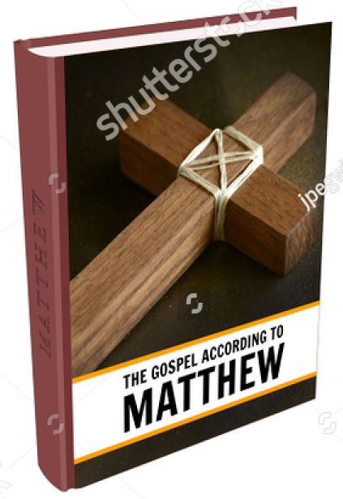 |
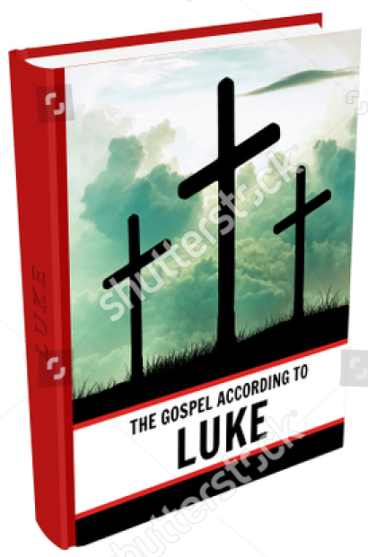 |
Luke wrote also Acts of the Apostles
The word 'Gospel' (= evangelion in Greek) means literally "the good news."
"In addition to the four canonical gospels, we have:
Charles W. Hedrick Bible Review "The 34 Gospels:
Diversity and Division Among the Earliest Christians"
- four complete non-canonicals,
- seven fragmentary,
- four known from quotations
- and two hypothetically recovered
for a total of 21 gospels from the first two centuries, and we know that others existed in the early period."
The Canonic Literature:
- Mark. In 25 pages, it is the shortest and was composed between 66 to 100CE, about 50 years after the supposed events. Although the passion, miracles and main characters (Jesus, Joseph, Mary, 12 disciples, Pilate...) are present, it lacks all the cynic principles (Beatitudes, Lord's prayer...) and apocalyptic prophecies embedded in Q1 and Q2, and two important events: Jesus birth and his apparitions after his death. Like the other gospels, it has been heavily interpolated by Christian scribes over time. Who knows what the original really contained!
- Matthew & Luke.
They have closely followed the Gospel of Mark,
with shared wording and structure, and the three of them are called synoptics.
NT Scholars think these three have preserved some historical data
but they remain a subject of intense debate with no consensus.
See the significant skepticism by scholarship chapter 1 Where are we today? Gospel Fictions.
Matthew focused on developing the Jesus character as a fulfiller of traditional Jewish prophecies and Davidic lineage. Luke, the most proliferant author of the NT (Paul is second) highlights salvation for the Gentiles, using familiar Greco-Roman tropes (virgin birth, miracles, resurrection, exaltation...) to draw them into the Christian story.
- John. It contradicts the three synoptics on many points and gives us a very different picture of Jesus. There is no birth, baptism, temptations and sacramental meal. For most scholars, it represents an interpretation of Christ as it gives us an entirely idealized and spiritualized picture of him. It is admitted to be unhistorical and dependent of the Synoptics.
- The Acts of the Apostles.
Written maybe by Luke, no clear evidence for it surfaces before 175 CE, in
Against Heresies by Irenaeus.
See Appendix: Rewriting History in Acts.
The Apocryphal Literature:
N=Narrative, S=Sayings
- N - Gospel of Peter
- S - Gospel of the Egyptians
- N - Gospel of the Hebrews
- N - Gospel of the Ebionites
- S - Preaching of Peter
- S - Secret Book of James
- N - Gospel of the Nazoreans
- S? - Gospel of Matthias
- S - Gospel of Mary
- N? - Gospel of the Savior
- S - Dialogue of the Savior
- SN - Gospel of Judas
- N - Infancy Gospel of James
- N - Infancy Gospel of Thomas
- Gospel of Truth ...
We also have 15 non-canonical extant Acts.
- Acts of Andrew
- Acts of Barnabas
- Acts of John
- Acts of Paul
- Acts of Peter
- Acts of Philip
- Acts of Thomas
- Acts of Paul and Thecla
- Acts of Peter and Andrew
- Acts of Peter and Paul
- Acts of Peter and the Twelve Apostles
- Acts of Pilate
- Acts of Thaddaeus
- Acts of Timothy
- Acts of Xanthippe, Polyxena, and Rebecca
See Wikipedia List of Gospels
At the time, there was no copyright enforcement ;-)
At the time, there was no copyright enforcement ;-)
Among this vast body of ancient literature concerning Jesus,
only the four NT Gospels and the Gospel of Thomas are widely considered by scholars
to contain reliable historical information, though fragments of other texts are occasionally used.
All the others have been dismissed.
"In my view, if we can use the Infancy Gospel of Thomas, we can use Alice in Wonderland just as well."
J.P.Meier
"There was an enormous floating mass of spurious literature created to suit party views."
Robertson Smith
"There can be no doubt that great numbers of books were then written with no other view than to deceive."
Rev. Dr. Giles.
Obscure men wrote Gospels and attached the names of prominent Christian characters to them,
to give them the appearance of importance. Works were forged in the names of the apostles,
and even in the name of Christ.
The early church was flooded with spurious religious writings.
But why four Gospels have been considered as authentic by the church?
Because
Because
"It is not possible that the Gospels can be either more or fewer in number than they are.
For, since there are four zones of the world in which we live, and four principal winds,
while the Church is scattered throughout all the world,
and the "pillar and ground" of the Church is the Gospel and the spirit of life;
it is fitting that she should have four pillars, breathing out immortality on every side,
and vivifying men afresh."
Church Father Irenaeus Against Heresies 3.11.8 end of the 2nd century CE
Well, at least, we know they are among the oldest.
In the end of the 1st century, these four Gospels recount the birth and the last year of a Jewish peasant from Galilee
who would have been crucified in Jerusalem around 33 CE.
First, like for the Epistles, we accept the Consensus on several key elements.
Who, Where and When
Who? Elite Jews (Gentile for Luke?)
"To gain admission to the canon, Gospels were attributed to apostles (Matthew and John)
or to those dependent on apostles for their information (Mark and Luke).
But today, these persons are not thought to have been the actual authors.
None of the texts themselves give the author's name - all four are anonymous."
J. M. Robinson The Gospel of Jesus:
In Search of the Original Good News
Indeed, the first recorded naming of the authors is by Irenaeus of Lyons, around 180 CE.
Beyond their works, these authors remain unknown to us.
However, significant deductions about them can be made based solely on the fact that they wrote such stories.
All Gospels were written in Koine Greek, not Aramaic (Jesus' language), suggesting educated authors or scribes.
"the Synoptic gospels were written by elite cultural producers working within a dynamic cadre of literate specialists,
including persons who may or may not have been professed Christians. Comparing a range of ancient literature,
her ground-breaking study demonstrates that the gospels are creative works produced by educated elites interested in Judean teachings,
practices, and paradoxographical subjects in the aftermath of the Jewish War and in dialogue with the literature of their age."
The Gospels of Mark and Luke contain numerous geographical inaccuracies—such as illogical travel routes—and
misunderstandings of contemporary Jewish religious practices.
Luke
While Christian apologists often identify the Luke mentioned in the Epistles
(Col. 4:14, 2 Tim. 4:11, Phil. 24) and companion of Paul
as the author of the Gospel of Luke & Acts, many scholars disagree.
Critics argue this tradition is unlikely because the Gospels were originally anonymous and
internal evidence suggests the author's theology and historical timeline often conflict with Paul's own letters.
See the blog of B. Ehrman
Luke in the Bible: Life, Death & Interesting Facts
By writing Acts, the author arguably created a 2nd-century piece of proto-Catholic propaganda.
For proponents of Christ Myth theory, the book goes a step further:
it rewrites history by linking Paul and early Christianity
with the idealized "new man" the author just helped constructed in his Gospel.
Church Fathers
Then, several decades after the first Gospel had been written, we got a
load of church Fathers between Antioch and Smyrna, knowing mostly each other, who were believing in a HJ:
Ignatius of Antioch (death between 115 or 140 CE?),
Polycarp of Smyrna (69-155 CE),
Papias of Hierapolis (60 - 130 CE),
Justin Martyr (100 - 165 CE).
Ignatius of Antioch (death between 115 or 140 CE?),
Polycarp of Smyrna (69-155 CE),
Papias of Hierapolis (60 - 130 CE),
Justin Martyr (100 - 165 CE).
Afterwards, the HJ movement spread even more:
Irenaeus of Lyons (130 - 202 CE),
Clement of Alexandria (150 - 215 CE),
Origen of Alexandria (185 - 253 CE) ...
Irenaeus of Lyons (130 - 202 CE),
Clement of Alexandria (150 - 215 CE),
Origen of Alexandria (185 - 253 CE) ...
Where? Rural Galilee
Written Where?
Between Egypt and Rome, we don't really know.
Luke in Rome? Matthew in Antioch?
and Mark in Rome? Syria? Antioch? or Alexandria?...
A location from Scriptures
Unlike the abstract, heavenly focus of the Epistles, the Gospels anchor the story of Jesus in the,
earthly settings of rural Galilee and Jerusalem.
We know Jesus' birth in Bethlehem is from Micah 5:2 but what about Nazareth?
"In fact, Matthew also ties Jesus to Nazareth using scripture,
by declaring that Joseph took his family to their new home,
"a city called Nazareth, that it might be fulfilled which was spoken by the prophets, ‘He shall be called a Nazarene.’"
Matt. 2:23
"Who these prophets were, Matthew unfortunately doesn’t tell us; and this “prophecy” isn’t found
in any existing Jewish scriptures we know of. But if Mathew was telling the truth (and that is not a given)
and there really was such a now-lost prophetic tradition, it’s entirely possible that fact alone was what
also led Mark to make Nazareth his choice for Jesus’ home over Bethlehem. But of course, that’s assuming
Mark even meant this to be taken as a geographic term at all…
Nazarene or Nazoraean?
...The Gospels actually almost never refer to Jesus as “Jesus of Nazareth.”
Mark calls him “Jesus the Nazarene,” while Matthew,
John and Acts always call him “Jesus the Nazoraean.”
...“Nazarene” can work to refer to a person from the village frequently called Nazara in Greek, as well as Nazareq
[Mc Graph Nazorean p.4].
But “Nazoraean” means nothing of the sort. It is the name of a sect.
In fact, it is one of the original names of the early Christian movement (or at least of one early faction).
In Acts 24:5, Paul is accused of being a
“ringleader of the sect of the Nazoreans.”
Fitzgerald, David Jesus: Mything in Action, Vol. I p. 133-134
Notice the existence of the village in the 1st Century is now secured by archeology.
We will see in d. How? By Using Symbolism that
the term "Nazarene" holds deep, multi-layered symbolism in Christian theology.
When? From 80s CE
Date Written
"They were composed in the last thirty years of the first century,
half a century after the fact."
James M. Robinson
Is 70 CE too early for Mark?
More probably, the Gospels were written during the last twenty years because besides Papias through Eusebius
around 130 CE, no church father knows of any written Gospel.
"Thus, we are confronted with a situation in which four different Christian writers
[Ignatius of Antioch, Polycarp of Smyrna,
Clement of Rome and the author of the Epistles of Barnabas]
over a period of some 40 yeras,
ranging from Alexandria to Antioch to Asia Minor to Rome, show no knowledge of written Gospels
-and this is up to a period of 60 years after the standard dating of Mark...
if those Gospels had been set down beginning as early as 70 CE,
it is difficult to understand how the situation revealed by the Apostolic Fathers could have existed.
Though the Fathers are beginning to draw on sayings and maxims which they attribute to Jesus,
their abysmal ignorance of the basic content of the Gospels, especially in regard to the passion,
would indicate that such documents and their dissemination are a late phenomenom."
E. Doherty Jesus Neither God nor Man p.466
The Acts of the Apostles could have been written in response
to the Marcionite threat which will give a date between 120-130 CE.
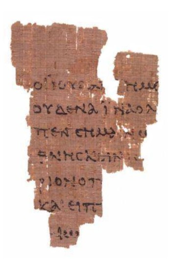
Dating Papyrus P52
The Rylands Library Papyrus P52 is a small fragment of the Gospel of John (18:31-33, 37-38)
discovered in Egypt in 1934, commonly considered the earliest surviving New Testament manuscript.
In the last twenty years several New Testament scholars (Thiede, Comfort-Barrett,
1999, 2001 and Jaroš, 2006)
have argued for an earlier date of most of these texts, between 80 to 120 CE.
Well, after counter examination by Palaeographers P. Orsini and W. Clarysse, and like two other tiny fragments, P90 and P104, it probably dates from the middle of the second century or even later, closer to 200 CE.
Well, after counter examination by Palaeographers P. Orsini and W. Clarysse, and like two other tiny fragments, P90 and P104, it probably dates from the middle of the second century or even later, closer to 200 CE.
Vridar Blog “New”
Date for that St John’s Fragment, Rylands Library Papyrus P52
Early New Testament Manuscripts and Their Dates A Critique of Theological Palaeography by P. Orsini and W. Clarysse.
Early New Testament Manuscripts and Their Dates A Critique of Theological Palaeography by P. Orsini and W. Clarysse.
Date of Events
Cconcerning the dates and timeframe of the events told in the Gospels,
we have some contradictory accounts.
Birth before 4 BCE or in 6 CE?
For Matthew, Jesus was born during Herod's reign, so before 4 BCE,
while for Luke, it was during the census of Quirinius in 6 CE.
See below Birth of Jesus.
Ministry of 1 or 3 Years?
The Synoptic Gospels (Matthew, Mark, Luke) imply a shorter, possibly one-year ministry,
focusing on Jesus's single Passover visit to Jerusalem, while the Gospel of John details
at least three Passovers, indicating a ministry of about three years.
A crucifixion around 33 CE (or 30 CE)
The crucifixion occurred during the governorship of Pontius Pilate (AD 26-36).
All Gospels also agree it was a Friday during Passover week (although John differs for the last supper), leading to scholarly debate between dates like A.D. 30 or 33.
A Life 100 Years Before?
Notice that R. Price points to certain sources (The Babylonian Talmud, Toledoth Jeschu
and Panarion by church father Epiphanius) that date a crucifixion event to an earlier period,
specifically during the reign of Alexander Jannaeus (who reigned c. 103–76 BCE).
What?
A Supernatural Tale
The Gospel of Mark is considered the most important of this Gospels literature because it originated the stories and characters as we know them.
It is only missing:
- Most of the cynic principles (Beatitudes, Lord's prayer...) (Q1)
- Many parables on the kingdom and eschatological prophecies with judgment themes (Q2).
- Jesus birth.
- His apparitions after his death.
As the oldest and shortest canonical Gospel, it should be at the same time the least altered by later legendary developments
and, therefore, the most historically reliable.
Well, it is not the case, it is the most fabulous one and firstly a long chain of miracles.
R. Carrier has documented All the
Fantastical Things in the Gospel according to Mark
"Our total rate is now either 117/666 or 123/678, leaving us with an average of almost 1 fantastical
thing every 6 verses across the entire Gospel of Mark,
or an average rate of 7 fantastical things per chapter—and over a hundred fantastical things altogether."
"Mark is therefore wildly more mythological in composition than any genuine history or biography of the time.
And Mark resembles only ancient fiction and mythology in this respect.
And yet Mark is the first narrative of a historical Jesus, and the core (and only really known) source for every other."
A consensus among secular scholarship.
"The framework stories of the gospels are the most highly mythologized type of material.
They include the narratives of Jesus' birth, baptism, transfiguration, crucifixion, resurrection, and post-resurrection appearances.
The transfiguration story is purely mythological, as are the birth narratives, the story of the empty tomb,
and the appearances of the resurrected Jesus to the disciples.
Critical scholars would not say that these derive from reminiscences."
B. Mack A Myth of Innocence
Knowing that the birth and post-resurrection appearances were added by Matthew and Luke,
we obviously won't get much more reliability afterwards.
YouTube - The God Who Wasn't there (2005)
An Overview of the Gospel of Mark
Before investigating the reliability of the Gospels,
we will review rapidly the content of the first Gospel in three parts:
- The beginning: 1:1-20
- The Miracles: 1:21-10:52
- The Passion: 11-1-16:8
For a complete review, see Historical Commentary on the Gospel of Mark
by M. A. Turton.
Mark 1:1-20 The beginning
Full extract of the 20 first verses in the Gospel of Mark.
"1 The beginning of the good news of Jesus Christ, the Son of God.
2 As it is written in the prophet Isaiah:
"3 See, I am sending my messenger ahead of you, who will prepare your way;" [Malachi 3:1]
"the voice of one crying out in the wilderness: 'Prepare the way of the Lord, make his paths straight'", [Isaiah 40:3]
"the voice of one crying out in the wilderness: 'Prepare the way of the Lord, make his paths straight'", [Isaiah 40:3]
5 John the baptizer appeared in the wilderness, proclaiming a baptism of repentance for the forgiveness of sins.
And people from the whole Judean countryside and all the people of Jerusalem were going out to him,
and were baptized by him in the river Jordan, confessing their sins.
6 Now John was clothed with camel's hair,
with a leather belt around his waist, and he ate locusts and wild honey
[Elijah in 2 Kings 1:8].
7 He proclaimed,
"The one who is more powerful than I is coming after me;
I am not worthy to stoop down and untie the thong of his sandals.
8 I have baptized you with water; but he will baptize you with the Holy Spirit."
[Isaiah 61:1 and Dead Sea Scroll 4Q521]
9 In those days Jesus came from Nazareth of Galilee and was baptized by John in the Jordan.
10 And just as he was coming up out of the water,
he saw the heavens torn apart and the Spirit descending like a dove on him.
11 And a voice came from heaven,
You are my Son, the Beloved; with you I am well pleased. [Psalm 2:7]
12 And the Spirit immediately drove him out into the wilderness.
13 He was in the wilderness for forty days, tempted by Satan;
and he was with the wild beasts; and the angels waited on him. [Genesis 7:12 & Exodus 24:18]
14 Now after John was arrested, Jesus came to Galilee,
proclaiming the good news of God, and saying:
15 "The time is fulfilled, and the kingdom
of God has come near; repent, and believe in the good news."
16 As Jesus passed along the Sea of Galilee,
he saw Simon and his brother Andrew casting a net into the lake for they were fishermen.
17 And Jesus said to them,
'Follow me and I will make you fishers of men.'
18 And immediately they left their nets and followed him.
'Follow me and I will make you fishers of men.'
18 And immediately they left their nets and followed him.
[T. Brodie has shown that this passage is modeled on the Elijah story in
1 Kings 19:19-21]
19 As he went a little farther, he saw James son of Zebedee and his brother John,
who were in their boat mending the nets.
20 Immediately he called them; and they left their father Zebedee in the boat with the hired men, and followed him."
Mark 1:21-10:52 The Miracles
1:21
They went to Capernaum, and when the Sabbath came, Jesus went into the synagogue and began to teach.
22 The people were amazed at his teaching, because he taught them as one who had authority, not as the teachers of the law.
23 Just then a man in their synagogue who was possessed by an impure spirit cried out,
24 “What do you want with us, Jesus of Nazareth?
Have you come to destroy us?
I know who you are—the Holy One of God!”
Have you come to destroy us?
I know who you are—the Holy One of God!”
25 “Be quiet!” said Jesus sternly.
“Come out of him!”
“Come out of him!”
26 The impure spirit shook the man violently and came out of him with a shriek.
27 The people were all so amazed that they asked each other,
“What is this? A new teaching—and with authority! He even gives orders to impure spirits and they obey him.”
“What is this? A new teaching—and with authority! He even gives orders to impure spirits and they obey him.”
Mark 1:21-27
Notice above a distinctive and puzzling feature
only present in the Gosepl of Mark:
The Messianic Secret
which we will analyze as a specific literary device.
The story is clearly driven by miracles & supernatural as the rest follows the same way...
|
1:21-28 1:29-31 1:32-34 1:40-45 2:1-12 3:1-6 3:7-12 4:35-41 5:1-20 5:25-34 5:35-43 |
cast out an evil spirit in Capernaum heals the fever of Peter’s mother-in-law heals many sick and oppressed in Capernaum cleanses a man with leprosy heals a paralytic let down through a roof heals a man’s withered hand on the Sabbath heals a great multitude of people calms a Storm on the Sea casts out demons into a herd of pigs heals a woman with an issue of blood raises Jairus’ daughter back to life |
|
6:30-44 6:45-52 6:53-56 7:24-30 7:31-37 8:1-13 8:22-26 9:2-13 9:14-29 10:46-52 |
feeds more than 5,000 women and children walks on water heals many sick after they touch him cast out demons from a demonized girl heals a deaf and mute man feeds more than 4,000 women and children heals a blind man at Bethsaida transfigured on the mount heals a boy with an unclean spirit restores sight to Bartimaeus in Jericho |
We have an average of one miracle of Jesus every 20 verses!
It seems Jesus is more powerful than any other wizard, from Gandalf, Asclepius, Merlin to Harry Potter!
Baptists and evangelists have nothing to fear.
There is no need to ban books and movies about Harry Potter
(About.com,
EducationWorld.com ...).
"It is endlessly fascinating to watch Christian theologians describe
Jesus as miracle worker rather than magician and then
attempt to define the substantive difference between those two...
There is, it would seem from the tendentiousness of such arguments,
an ideological need to protect religion and its miracles from magic and its effects."
J.D. Crossan The Historical Jesus
Mark 11:1-16:8 The Passion
Almost everything is derived from the Old Testament (see below By Haggadic Midrash).
They are a chain of events that have a very low historical probability (see below By Cheating with History)
but a very high symbolic & theological meanings (see below By using Symbolism & Allegory).
It also comes with its load of supernatural deeds:
| 11:1-6 | prophecy of the colt and villagers question |
| 11:12-14,20 | curses the fig tree |
| 13:2 | prophecy of the destruction of the temple |
| 14:8 | prophecy of his own death & burial |
| 14:13-16 |
prophecy of the man carrying a jar & the passover room |
|
14:18 14:30 14:41-42 15:33 15:38 16:6 |
prophecy of the betrayal of Judas prophecy of Peter’s denial prophecy that his death is coming darkness over the whole land for 3 hours curtain of the temple torn in two. Jesus has risen (?) |
The following Gospels, either the three canonical (Matthew, Luke and John)
or 25 apocryphal (Peter, Thomas, Infancy...) added many more incredible things!
Then, an important piece of this study
is to investigate the reliability of all these new claims about Jesus.
Investigating their Reliability
What criterion shall we use to decide if something is reliable or not?
Well, I won't go into lenghy debates here and check these five essential elements:
- Supernatural
- Ahistorical
- Symbolic
- Scriptures Parallels
- Hellenic Parallels
Of course, to find parallels doesn't mean that it is not true, but depending of the case,
it can substantially decrease its probability.
It is useful to remind here what we said in Gospel Fiction of chap.1:
Whatever is written [in the Gospels], there will always be a good possibility that it was simply invented by its author.
Any claim about Jesus has no true credibility until it has a corroboration with external independant material.
The burden of proof is on their side.
The burden of proof is on their side.
Methodology
- a. Compare with the Literary Context
- Extract & Judge* everything the Gospels say about Jesus
b. besides Passionc. about Passion
- d. How the authors knew it and How it spread
a. Literary Context
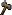 JewishWars |
 Religious ReligiousContext |
Greek & |
Martyrdom Stories |
Founding Myth Pattern |
Burden of Proof |
|
|
|||||
Jewish Wars
Even at this time, Jews were regularly in wars.
Maccabean Revolt (167–141 BCE)
"It was a Jewish rebellion led by the Maccabees against the Seleucid Empire and against Hellenistic influence on Jewish life.
The main phase of the revolt lasted from 167 to 160 BCE and ended with the Seleucids in control of Judea,
but conflict between the Maccabees, Hellenized Jews, and the Seleucids continued until 134 BCE,
with the Maccabees eventually attaining independence.
First Jewish–Roman War (66-74 CE)
"The Roman suppression of the revolt had a significant impact on the local population,
with many rebels perishing in battle, displaced, or being sold into slavery.
The temple of Jerusalem and much of the city was destroyed by fire and the Jewish
community was thrown into turmoil by the devastation of its political and religious leadership."
See Wikipedia
Then, several decades after Paul, while new Epistles were being written,
tensions continued to build in the region.
The Kitos War (115–117)
Major Jewish communities throughout the Eastern Mediterranean revolted in 115 CE.
It took place mainly in the diaspora (in Cyprus, Egypt, Mesopotamia) and only the final chapter was fought in Judea.
The immense number of casualties during the Kitos War depopulated Cyrenaica and Cyprus
and also reduced Jewish and Greco-Roman populations in the region.
Bar Kokhba revolt (132-136 CE)
The result was a level of destruction and death that has been described as a genocide of the Jews,
a ban on Judaism, and the renaming of the province from Judea to Syria Palaestina,
with many Jews being sold into slavery or fleeing to other areas around the Mediterranean.
Although Hadrian's death (in 137 CE) eased restrictions and persecution of the Jews,
the Jewish population of Judea had been greatly reduced.
See Wikipedia
Estimation of Casualties and losses for the first and third Jewish wars combined is approximately 350,000 deaths,
which would be about one third of the original population.
Matthew White, The Great Big Book of Horrible Things
So, the Gospels have been written in the aftermath of one of the worst cataclysm in Jewish history.
This decreases at the same time the chance that anyone of Jesus' generation would still be alive in the 80s.
Notice the interesting possibility suggested by R.G. Price
in The Gospel of
Mark as Reaction and Allegory:
"The Gospel of Mark is a story that builds upon a Jewish tradition of self-criticism
and seeks to make sense of the destruction and horror of the Jewish War with Rome."
Religious Context
No More Temple, No More Sacrifice
"By the end of that same [first] century, after eight years of class warfare and colonial revolt, the Jewish homeland was devastated,
Jerusalem and its great Temple were destroyed, and leadership had shifted its paradigm from Temple, priest, and sacrifice to Torah, rabbi, and study.
That is religious paradigm shift writ large."
J.D. Crossan The Power of Parable
Jewish Sects & Hellenic Philosophies
We looked (rapidly) in the previous chapter at the Religious Context when the the Epistles were written.
Well, this context applies of course to the Gospels too. Particularly, we found that there was A Multitude of Jewish Sects
with Messianic & Apocalyptic Expectation.
We can add that in the Dead Sea scrolls - War Scroll, the Essenes
link the Kingdom of God with Messianic expectations.
Hellenic Philosophies were also invading the land,
including one we didn't named yet: "Cynicism".
We will come back on it in the chapter Preaching Jesus Was A Cynic Philosopher.
The Tannaim: a time of conflict & split
"The Tannaim operated under the occupation of the Roman Empire.
During this time, the Kohanim (priests) of the Temple became increasingly corrupt and were seen by the Jews as collaborators with the Romans,
whose mismanagement of Iudaea province (composed of Samaria, Idumea and Judea proper[4]) led to riots, revolts and general resentment.
Until the days of Hillel and Shammai, the last generation of the Zugot, there were few disagreements among Rabbinic scholars.
After this period, though,
The "House of Hillel" and the "House of Shammai" came to represent two distinct perspectives on Jewish law,
and disagreements between the two schools of thought are found throughout the Mishnah.
The latter is the first major written collection of the Jewish oral traditions which is known as the Oral Torah."
Wikipedia on Tannaim,
the rabbinic sages whose views are recorded in the Mishnah, from approximately 10–220 CE.
A Time of Midrash
From Palestine to Alexandria, Jews were reinterpreting the Sacred Texts.
It includes for example the 1st Century
Biblical Antiquities (or Pseudo-Philo)
a whole second Bible in 65 chapters!
See Early Jewish Writings by Peter Kirby.
We will regularly find connection between the OT and Jesus in this chapter. Paticularly in:
Greek & Latin Novels

Or What R. Carrier says about
Robyn Faith Walsh and the Gospels as Literature.
We will review below in Preaching Jesus was A Hero Founder many ressemblances between the Gospels and GrecoRoman literature.
Martyrdom Stories
Two main principles
"If we take a widely held definition of a martyr, we can see two main principles about individuals:
- they have a choice to either live or die
- they prefer to die, because they value either a way of life, a law, a person, or a principle more highly than their own life."
according to C. Moss in The Myth of Persecution
Undeniably, it corresponds to Jesus.
The Origin of Martyrdom
"Scholars hypothesize that this idea of delayed judgment and eschatological reward developed because these promises of immediate reward were constantly unfulfilled.
As a result and in order to avoid the conclusion that God was either notoriously unreliable or fundamentally incompetent,
the idea of future eschatological reward and punishment emerged. Injustices that were not righted in one’s lifetime would be settled at the end of time.
Within the context of persecution and martyrdom, this promise proved particularly potent.
It diffused larger questions about suffering and divine power.
That a righteous person died for God was no longer a potential threat to the omnipotence of God; it was a means of securing eternal reward."
Moss, Candida R.
The Myth of Persecution: How Early Christians Invented a Story of Martyrdom (p. 47).
In the Greco-Roman World
"Greek and Roman authors were interested in a person’s conduct toward and at the moment of his or her death.
Nobility and self-control—often demonstrated through a voluntary increase of pain—reigned over comfort."
[Among others, we have:- Achilles in Euripides' play
- Iphigenia, the daughters of Erechtheus in Demosthenes’s Funeral Oration.
(Like for the Erechthidae, many founding myths involves tales of death and human sacrifice.)
- Lucretia
- Socrates
- and many other philosophers like Anaxarchus, Diogenes of Sinope, Zeno]
"In many ways the death of Lucretia set in motion the events that led to the founding of the Roman Republic.
Her violation became a symbol for Tarquinian oppression, and her suicide the catalyst for rebellion.
The conceptual cornerstones of Rome were laid with Lucretia’s death."
In the Jewish World
"Although Greeks and Romans wrote extensively about the glory of dying for a cause,
they were not unique in this; the same principle can be found in the Hebrew scriptures and in ancient Jewish literature."
[Martyrdoms in Second Temple Judaism:
- The righteous will awake to everlasting life in Daniel 12:1-3.
- Eleazar, a well-respected elderly scribe, chooses death rather than violating the Jewish law by eating forbidden meat. He refuses to compromise his faith and sets an example of courage for the younger generation. 2 Maccabees 6:24-31.
- A family of 7 brothers and their mother are butchered in 2 Maccabees 7 but they are certain that their bodies will be returned to them in the resurrection (2 Macc. 7:11, 14, 23, 29, 36).]
"The Maccabean martyrs are presented as examples of courage and moral fortitude,
but they are—like the author of Daniel—absolutely confident that in the future
they will be vindicated and rewarded for their behavior."
Moss, Candida R. The Myth of Persecution
A Common Idea
"Long before the birth of Jesus, the ancient Greeks told stories about the deaths of their fallen heroes and the noble deaths of the philosophers,
the Romans saw the self-sacrifice of generals as a good thing, and Jews in ancient Palestine accepted death before apostasy.
The idea of sacrificing oneself for one’s religious principles, country, or philosophical ideals was remarkably common.
An ancient Greek or Roman would have expected an honorable person to prefer death to dishonor, shame, or failure.
This kind of conduct wasn’t even seen as heroic; it was expected."
Moss, Candida R. The Myth of Persecution
The Founding Myth Pattern
A Recurrent pattern of the ancient world
The ancient world was full of local and national traditions about men,
semi-divine figures or gods involved in the beginnings of religions, communities and nations, like
Lao-Tse (Taoism), Lycurgus of Sparta or William Tell at the time of the founding of the Swiss Confederation.
"Beginning in protohistorical times many civilizations and kingdoms adopted some version of a heroic model national origin myth,
including the Hittites and
Zhou dynasty in the Bronze Age;
the Scythians, Wu-sun,
Romans and Koguryo
in Antiquity; Turks
and Mongols during the Middle Ages; and the Dzungar Khanate
in the late Renaissance."
C. Beckwith 2009 Empires of the Silk Road
Jewish Founding Myths
The Torah (or Pentateuch, the first five books of the Bible) forms the charter myth of Israel,
the story of the people's origins and the foundations of their culture and institutions.
It is a fundamental principle of Judaism that the relationship between God and his chosen people
was set out on Mount Sinai through the Torah.
The Exodus tells how God delivered the Israelites from slavery and
how they therefore belonged to him through the Covenant of Mount Sinai.
Jewish fictional heroes include Adam, Enoch, Methuselah, Noah, Abraham, Isaac, Moses, Jacob, Joshua...
Hellenic Founding Myths
Founding myths feature prominently in Greek mythology.
"Ancient Greek rituals were bound to prominent local groups and hence to specific localities",
Walter Burkert.
Thus Greek and Hebrew founding myths established the special relationship between a deity and local people,
who traced their origins from a hero and authenticated their ancestral rights through the founding myth.
Greek founding myths often embody a justification for the ancient overturning of an older, archaic order,
reformulating a historical event anchored in the social and natural world to valorize current community practices,
creating symbolic narratives of "collective importance" enriched with metaphor in order to account for traditional chronologies,
and constructing an etiology considered to be plausible among those with a cultural investment.
Some famous ones:
- The Romans with Romulus
- The Ionians with Theseus
- The Dorians with Hercules and his Twelve Labors
- The Mycenaeans with Perseus, who established the hegemony of Zeus and the Twelve Olympians,
- The Olympic Games with Pelops
Other Founding Myths
- King Arthur
- Ned Ludd, founder of the Luddite movement.
- The Cargo Cults revere completely mythical heroes who were historized in Tom Navy and John Frum.
All of them share the same goal of unifying people under the same moral authority.
The burden of proof
The Fairy Tale Contamination:
"...given the large proportion of uncorroborated miracle claims made about Jesus in the NT documents,
we should, in the absence of good independent evidence for an historical Jesus, remain sceptical about his existence."
Stephen Law
And the only possible independent evidence we have of Jesus are the Epistles!
"Miracles do not happen. Stories of miracles are untrue.
Therefore, documents in which miraculous accounts are interwoven with reputed facts,
are untrustworthy, for those who invented the miraculous element might
easily have invented the part that was natural."
Marshall J. Gauvin Did Jesus Christ Really Live?
A Christian Founding Myth?
There would be nothing peculiar that Christians did the same thing.
| "In both Greek & Jewish view, the mythic past had deep roots in historic time, its legends treated as facts." L. Edmunds Approaches to Greek Myth |
b. Preaching Jesus Was
| A Hero Founder |
A new Moses, Elijah, Elisha |
Temptation Birth, Baptism... |
A Performer of Miracles |
A Cynic Philosopher |
A Prophet of the Kingdom |
A Martyrdom |
|
|
||||||
A Hero founder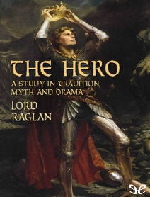
The gospel life of Jesus corresponds in most particulars with the worldwide paradigm
of the mythic hero archetype as delineated by Lord Raglan,
Otto Rank, and others. Drawn from comparative studies of Indo-European and Semitic hero legends,
this pattern contains 22 typical, recurrent elements.
Top 15 Heroes in Folklore:
- Oedipus 21
- Moses 20
- Jesus 20
- Theseus 19
- Dionysus 19
- Romulus 18
- Perseus 17
- Hercules 17
- Zeus 15
- Bellerophon 14
- Jason 14
- Osiris 14
- Pelops 13
- Asclepius 12
- Joseph 12 (in Genesis)
A. Dundes Holy Writ as Oral Lit: The Bible as Folklore
slightly updated by R. Carrier
The first historical figures in this ranking with 10 matching elements are
Alexander the Great and Mithridates of Pontus.
"Jesus, whether in Q or Mark, serves as a symbol around which the sectarian and instructional message is built.
Such messages are best impressed on the recipient in personal stories involving an individual;
he serves better as a motivator and exemplar than does a summary directive.
Even the miracles and controversy stories, originally identified with the community,
would inevitably have benefited by being focused on a representative individual,
since in that way they could be dramatized and glorified, brought home in a more personal way."
E. Doherty
Jesus the Hellenistic Hero
Gregory Riley also summarized the Hellenic literature about the Hero
- is typically "the offspring of the union between divine and human parents"
- is known to be a person of remarkable talent
- has a fate interwoven with the fate of his people
"their very genetics placed them in the mids of destiny on a larger-than-human scale."And that "forms a complex pattern of divine justice in which the gods themselves are partners: the hero suffers humiliation, privation, and even death as a kind of bait in a larger divine trap designed to catch and destroy the wicked"like in the example of Odysseus, whose wanderings eventually led to the destruction of the wicked suitors. - has divine ennemies:
"The issue of destiny, often fatal destiny, points to another aspect of the heroic career - heroes have divine enemies." - has rulers as human enemies and that the rulers who abuse him bring suffering on his city (such as Troy and Thebes in Greek legends or Jerusalem in Christian).
- is tested "Common to all stories of heroes is the test of character -
the critical situation that is the hero's destiny and shows forth the true character of the soul"
like in the choice of Heracles between Vice and Virtue and subsequently in the labors.
- dies "in the prime of life, in the midst of the very test, the crisis for which they were destined".
- chooses to die "for principle and with honor one of the most famous heroic events to be imitated in the entire tradition."
- receives the prize of immortality:
"One may see here the concept that among the ancient heroes suffering led to a prize. The prize for Heracles was immortality, but for the rest of us, in spite of the assurances of the philosophers, the prize was an uncertain remembrance of bravery among our friends and family, or perhaps nothing at all."
- could act as an intermediary:
"What remained after death was the right of the hero to stand on behalf of his or her worshipers who themselves passed the test. This was true because through death the hero became a transformed being."
Adapted from P. Kirby review of Gregory Riley: Jesus the Hellenistic Hero
"Heroes not only offered help -
their stories also provided understanding of the proper modes of action.
They were models, examples, and ideals."
"If one is not a New Testament scholar, one may see with little difficulty from the preceding chapters
that stories of the life of Jesus were very much set in the mold of the stories of the ancient heroes."
Gregory Riley One Jesus, Many Christs
Jesus as Heracles or Romulus
"Miller argues, early Christians would have understood the resurrection story as fictitious rather than historical in nature.
By drawing connections between the Gospels and ancient Greek and Roman literature,
Miller makes the case that the narratives of the resurrection and ascension of Christ applied extensive and unmistakable structural
and symbolic language common to Mediterranean "translation fables,"
stock story patterns derived particularly from the archetypal myths of Heracles and Romulus."
Also by Richard C Miller:
Mark's Empty Tomb and Other Translation Fables in Classical Antiquity
Journal of Biblical Literature, v. 129, no. 4 (2010)
Rewriting Homer
"The writer of the first Gospel was familiar with the conventions of Hellenistic literary composition,
including its dramatic and argumentative techniques.
The story of the gospel shares a lot of similarities with the Greek "Bible", the Iliad and Odyssey
though Mark has recasted and inverted the plot into a Jewish anti-epic novel."
Both men
- were carpenter
- are heroes who suffer their fate imposed by a god
- faced supernatural opposition
- traveled with companions unable to endure the hardships of the journey
- returned to a home infested with rivals who would attempt to kill him as soon as they recognized him
- returned from Hades alive
Parallels between both stories could explain several Gospels enigmas.
Dennis MacDonald The Homeric Epics and the Gospel of Mark
and the Online Review by R.Carrier
A new Moses/Elijah/Elisha
"The parallels between Jesus
and other Jewish prophets, both biblical and post-biblical, are numerous and vital.."
E.P. Sanders
Moses
The life of Jesus has many parallels with the life of other prophets in the OT.
This is illustrated in many Christian works.
6 panels describing the Stories of Moses in the Sistine Chapel South Wall
Same North Wall
Moses vs. Jesus Quotes
| Moses | Jesus |
"Escaped being killed as a baby when the decree
of a king (Pharaoh) had condemned all male infants to death"
Exodus 1:8–22 |
"Escaped being killed as a baby when the decree
of a king (Herod) had condemned all male infants to death"
Matthew 2:1–16 |
"Was not an Egyptian, but lived
among Egyptians (who preserved his life) when an infant"
Exodus 2:1–10 |
"Was not an Egyptian, but lived among Egyptians
(who preserved his life) when an infant"
Matthew 2:13–15 |
Was raised with the legal right to become a king but belonged to a
nation (Israel) oppressed by a pagan and foreign government (Egypt) |
Was raised with the legal right to
become a king but belonged to a nation (Judah-Israel) ruled by a pagan and foreign government (Rome) |
"Freed his people from slavery
through a “lamb … without blemish, a male of the first year”"
Exodus 12:5 |
"Freed his people from sin through his
own blood, being the “lamb of God” without blemish"
John 1:29, 1 Peter 1:19 |
"Came out of Egypt"
Exodus 13:8–9 |
"Returned out of Egypt"
Matthew 2:14–15 |
"Passed through the Red Sea"
Exodus 14:21–28 |
"Passed through the waters of baptism"
Matthew 3:13–16 |
"Spent forty years in wilderness"
Deut 8:2 |
"Spent forty days in wilderness"
Matthew 4:1–2; Mark 1:13; Luke 4:1–2 |
"Fasted for forty days and forty nights"
Exodus 24:17–18; Deut 9:9 |
"Fasted for forty days and forty nights"
Matthew 4:1–2 |
"While in the wilderness, was administered to by angels and was tempted"
Exodus 23:20–23; 17:2, 7 |
"While in the wilderness, was administered to by angels and was tempted"
Mark 1:12–13; Matthew 4:8–11 |
"Gave the law from a mountain"
Exodus 19–24 |
"Gave the new law from a mountain"
Matthew 5–7 |
Like Jesus, Moses performed many Miracles.
He is most famous for parting the waters of the Red Sea, but through God’s awesome power,
he also turned the river to blood and sent several other infamous plagues upon Egypt,
changed his staff to a serpent, changed a healthy hand to one diseased with leprosy,
and drew water from a rock.
Exodus 4:1-9, 7:14-25, 8:1-32, 9:1-35, 10:1-27, 12:29-30, 12:17-14:31, 15:22-27, 17:1-7.
Elijah and Elisha
The biblical account of Elijah and Elisha has also served as a literary model behind the Gospels.
For Thomas L. Brodie, it is the primary one as we have convincing evidence
that Luke reused Elijah/Elisha narratives (1 & 2 Kings).
Elijah vs. Jesus Quotes
| Elijah | Jesus |
"there appeared a chariot of fire, and horses of fire, and parted them both asunder;
and Elijah went up by a whirlwind into heaven."
2 Kings 2:11 |
"While he was blessing them, he left them and was taken up into heaven."
Luke 24:51 |
"But he himself went a day's journey into the wilderness,...
and went in the strength of that meat forty days and forty nights unto Horeb the mount of God."
1 Kings 19:4-8 |
"And Jesus...was led by the Spirit into the wilderness,
Being forty days tempted of the devil. And in those days he did eat nothing."
Luke 4:1-2 |
"suddenly an angel touched him, and said to him, “Arise and eat.”"
1 Kings 19:5-7 |
"Then the devil left him, and angels came and attended him."
Matthew 4:11 |
"...that the son of the woman...fell sick; and his sickness was so sore, that there was no breath left in him.
And he said unto her, Give me thy son. And he took him out of her bosom...and laid him upon his own bed.
And he cried unto the Lord...And the Lord heard the voice of Elijah; and the soul of the child came into him again, and he revived."
2 Kings 2:11 |
"Now when Jesus came, he found that Lazarus had already been in the tomb four days...
Jesus wept...and said, “Father, I thank you that you have heard me.
I knew that you always hear me, but I said this on account of the people standing around, that they may believe that you sent me.
When he had said these things, he cried out with a loud voice, “Lazarus, come out.” The man who had died came out"
John 11:17-44 |
"Elijah took his cloak, rolled it up and struck the water with it.
The water divided to the right and to the left, and the two of them crossed over on dry ground".
2 Kings 2:11 |
"And in the fourth watch of the night Jesus went unto them, walking on the sea."
Matthew 14:25 |
For more info, see Beyond the Quest
for the Historical Jesus: Memoir of a Discovery by T.L. Brodie, 2012, a Irish Dominican priest and scholar
who believes Jesus never existed
"...the topic that the Gospels single out as the major theme of his message:
He taught that the kingdom of God was at hand.
This depends on a very Jewish idea, that God controls history and that it has a goal.
This is one of the main theological ideas in the Bible and one that was fully shared by first-century Jews."
E.P. Sanders Jesus in historical Context
Birth-Temptation-Baptism...
Born in Bethlehem to the Virgin Mary
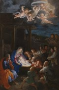
Miraculous births are a common theme in mythological, religious and legendary narratives and traditions.
They often include conceptions by miraculous circumstances and features such as intervention by a deity,
supernatural elements, astronomical signs, hardship or, in the case of some mythologies, complex plots related to creation.
- There is nothing about the birth of Jesus in all the Epistles, (only that Jesus was "Born of a Woman" Galatians 4:4-7 that we review substantially) Q, Thomas, Didache, Mark, John, 1 Clement, Shepherd of Hermas...
- The story of Jesus' birth exists only in Matthew & Luke
where they have nothing in common except:
- the name of the parents (Mary & Joseph) taken from Mark.
- the location (Bethlehem) taken from the OT:
"But thou, Bethlehem Ephratah, though thou be little among the thousands of Judah,
yet out of thee shall he come forth unto me that is to be ruler in Israel;
whose goings forth have been from of old, from everlasting."
Micah 5:2
Two Different Tales
| Matthew | Luke |
|---|---|
During Herod's reign, before 4 BCE. |
During the census of Quirinius in 6 CE. |
Before the Birth |
|
|
|
The Virgin Mary gives birth to her son in Bethlehem of Judea.
|
|
|
|
Matthew is a pastiche of the OT
- The virgin & Jesus' name: Isaiah 7:14, 8:8b, 10
- Bethlehem Micah 5:2
- The star: Numbers 24:17-19
- Gold & frankincense from Magi: Isaiah 60:3, 6
- Escape to Egypt: Hosea 11:1
- Herod's slaughter of the newborns (Jeremiah 31:15) is borrowed from the nativity of Moses in Exodus, though Hercules, Romulus and Remus, Oedipus, Perseus, Cyrus the Great, Caesar Augustus, the prophet Zoroaster, the patriarch Abraham and the god Krishna all escaped the dread designs of the evil when still in their cribs.
The virgin mother is a mistranslation
The virgin mother feature comes from a mistranslation of Isaiah 7:14
from Hebrew to Greek:
| Hebrew scriptures |
Septuagint (Greek translation used by the authors of the Gospels) |
| "Therefore the Lord himself will give you a sign. Look, the young woman is with child and shall bear a son, and shall name him Immanuel." | "Therefore the Lord himself will give you a sign: The virgin will be with child and will give birth to a son, and will call him Immanuel." |
Baptized by John
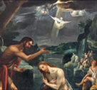
Baptized by John.
40 Days in the Desert & Temptations
Mark 1:12-13, Matt. 4:1-11, Luke 4:1-13
Very short in Mark, Matthew and Luke expanded it a lot.
After His baptism, Jesus was led by the Spirit into the desert for 40 days, where He fasted,
faced temptation, and relied entirely on God’s word (Matt. 4:1-2).
This period was not random but a divinely guided preparation for His public ministry,
demonstrating both His humanity—experiencing hunger, thirst, and fatigue—and His divinity,
by resisting Satan’s temptations.
AhistoricalSupernatural
A myhtical scene for the majority of critical scholars.
OT ParallelesSymbolicJesus’ 40 days in the desert symbolize testing, preparation, and perfect obedience,
fulfilling Israel’s vocation and overcoming temptation where Adam and Israel had previously failed.
-
Matthew directly quotes four times the OT:
- Matt. 4:4 = Deut. 8:3
- Matt. 4:6 = Psalm 91:11,12
- Matt. 4:7 = Deut. 6:16
- Matt. 4:10 = Deut. 6:13
- The Number 40 carries deep biblical symbolism.
In Scripture, 40 often signifies testing, trial, or preparation before a transformative event. Examples include:
- The Israelites’ 40 years in the wilderness, testing their faithfulness (Numbers 14:33-34).
- Moses’ 40 days on Mount Sinai receiving the Law (Exodus 34:28).
- Elijah’s 40-day journey to Mount Horeb (1 Kings 19:8).
- The Flood lasting 40 days and nights (Genesis 7:12).
- The Desert (Isolation & Dependence) represents a desolate place for spiritual growth, prayer, and detachment from worldly comforts.
- Fasting (Self-Denial): Represents prioritizing spiritual sustenance over physical desires.
- The Temptations (Trials):
- Stones to Bread: Symbolizes the temptation of selfish power and instant gratification.
- Temple Pinnacle: Symbolizes testing God for attention or validation.
- Kingdoms of the World: Symbolizes the temptation of idolatry, power, and fame.
- By resisting Satan, He binds the strong man and anticipates His ultimate triumph in the Passion, showing that His ministry is rooted in filial love and total submission to God’s will. This also models for humanity how to resist spiritual trials through reliance on God’s word and obedience.
Transfigured
Mark 9:2–13, Matt. 17:1–8, Luke 9:28–36
AhistoricalSupernatural
A myhtical scene for the majority of critical scholars.
OT ParallelesSymbolic
Nearly every element carries deep symbolic meaning, primarily pointing to Jesus' divine identity and his role as the fulfillment of Jewish scripture.
- Moses and Elijah: These two represent the two pillars of the Old Testament: the Law (Moses) and the Prophets (Elijah). Their appearance with Jesus symbolizes that he is the fulfillment of all Old Covenant revelation.
- Peter, James, and John: Representing the "inner circle" of disciples, they served as legal eyewitnesses to Christ’s glory to strengthen their faith before the upcoming trials of the Passion.
- The Mountain: Historically a place of divine encounter (like Mt. Sinai for Moses and Mt. Carmel for Elijah), it symbolizes the meeting point between human nature and God—the eternal meeting the temporal.
- Radiant Light and White Clothing: The "dazzling white" garments and shining face (likened to the sun in Matthew) represent Shechinah Glory, the visible manifestation of God's presence. Unlike Moses, whose face merely reflected God's light, Jesus' glory is shown to come from within himself, signifying his inherent divinity.
- The Bright Cloud: This mirrors the cloud that led the Israelites in the desert and overshadowed the Tabernacle, signaling the direct presence of God the Father.
- Three Tents (Tabernacles): Peter’s offer to build tents refers to the Feast of Tabernacles, which was associated with the arrival of the Messianic Kingdom.
A Performer of Miracles
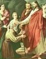
A beginning without Miracles?
This main feature of Jesus' journey on earth cannot be found in most of Christian literature including all the Epistles,
the Didache, Thomas, 1 Clement
and the hypothetical Q1 and Q2.
They seem also denied by:
"To test him, the Pharisees asked him for a sign from heaven. He sighed deeply and said,
“Why does this generation ask for a sign? Truly I tell you, no sign will be given to it.”"
“Why does this generation ask for a sign? Truly I tell you, no sign will be given to it.”"
Mark 8:11-12
"Jews demand signs and Greeks look for wisdom, but we preach Christ crucified: a stumbling block to Jews and foolishness to Gentiles."
1 Corinthians 1:22
But rapidly, they became an integral part of Christian's claims.
Miracles Parallels in the OT and Greco-Roman world
|
Born from the Virgin Mary and the Holy Spirit
Luke 1:11-2:22, Matthew 1:18-2:21 |
|
| Jewish Parallels | Hellenic/Pagan Parallels |
|
There is no Jewish parallel but it was predicted:
"Therefore the Lord himself will give you a sign:
The virgin will be with child
and will give birth to a son, and will call him Immanuel."
Isaiah 7:14
|
Virgin or Miraculous birth:
|
|
Exorcism
One of the great superstitions of the age - one which Mark's Jesus is unable to rise above - was the pervasive belief in demons,
the presence of evil spirits in the very air in which people moved. These demons were regarded as responsible for many types of illness,
both physical and mental.
"“Be quiet!” said Jesus sternly. “Come out of him!”
The impure spirit shook the man violently and came out of him with a shriek." Mark 1:25-26
"For Jesus had said to him, “Come out of this man, you impure spirit!”
... The demons begged Jesus, “Send us among the pigs; allow us to go into them.” He gave them permission, and the impure spirits came out and went into the pigs. The herd, about two thousand in number, rushed down the steep bank into the lake and were drowned." Mark 5:8-13
"Then he told her, “For such a reply, you may go; the demon has left your daughter.”
She went home and found her child lying on the bed, and the demon gone." Mark 7:29-30
...
|
|
| Jewish Parallels | Hellenic/Pagan Parallels |
|
The Syro-Phoenician woman in Mark 7 is most likely based on the widow of Zarephath who
has similarly concerned for her son 1 Kings 17:8-24
"For I have seen a certain man of my own country, whose name was Eleazar, releasing people that were demoniacal in the presence of Vespasian,
and his sons, and his Captains, and the whole multitude of his soldiers: the manner of the cure was this...
: he put a ring that had a root of one of those sorts mentioned by Solomon
to the nostrils of the demoniac: after which he drew out the demon through his nostrils:
One may have to bargain with a particularly fierce demon.
Like Jesus allows the fleeing legion of demons to take up temporarry residence in the nearby herd of swine (Mark 5:10-13),
so did Rabbi Hanina ben Dosa bargain with Agrath the Queen of Demons.
"'I decree that you shall never again pass through an uninhabited place.'
She said to him, 'Please allow me in for a limited time.'
He then left her Sabbath nights and wednesday nights"
|
Circe changed Odysseus's soldiers (legions) into swine and their escape from the giant Cyclops Polyphemus.
Homer Odysseus
"Now, when Apollonius gazed on him, the ghost in him began to utter cries of fear and rage,
such as one hears from people who are being branded or racked; and the ghost swore that he would leave the young man alone
and never take possession of any man again. But Apollonius addressed him with anger,
as a master might a shifty, rascally, and shameless slave and so on,
and he ordered him to quit the young man and show by a visible sign that he had done so."
"I shall be glad, now, to hear your views on the subject of those who cure demoniacal possession;
the effect of their exorcisms is clear enough, and they have spirits to deal with.
I need not enlarge on the subject: look at that Syrian adept from Palestine:
every one knows how time after time he has found a man thrown down on the ground in a lunatic fit,
foaming at the mouth and rolling his eyes; and how he has got him on to his feet again and sent him away in his right mind;
and a handsome fee he takes for freeing men from such horrors. He stands over them as they lie,
and asks the spirit whence it is. The patient says not a word, but the spirit in him makes answer,
in Greek or in some foreign tongue as the case may be, stating where it comes from,
and how it entered into him. Then with adjurations, and if need be with threats,
the Syrian constrains it to come out of the man. I myself once saw one coming out: it was of a dark, smoky complexion."
|
|
Healing People
Mark 8:22-26, 10:46-52 (blind), 1:40-45 (leprosy), 1:29-31 (fever), 2:1-12 (paralysis), 3:1-6 (hand), John 9:1-41 (blind)
|
|
|
Here is a man from Bethsaida, a sinful town doomed as sodom was (see Matt 11:20-34/Luke 10:12-15).
The man is singled out like Lot as the one innocent in Sodom.
He is blind, as the angels visiting Sodom struck the wicked populace blind.
And like Lot he is being warned to flee the city in advance of its inevitable destruction.
Genesis 19:11-17
Happy reversal of paralysis in
2 Kings 1:2-17
Naaman Healed of Leprosy
2 Kings 5:1-19
A man's withered hand restored
1 Kings 13:1-6
|
In Mark a blind beggar, son of Timaeus, recognizes Jesus as the royal son of David that is passing by,
while in the Odyssey
the blind Tiresias comes up to Odysseus and recognizes him and calls him by name.
Homer Odyssey Book XI
Now it is well that I should not pass over what happened in the Temple, while relating the life of a man who was held in esteem even by the gods. For an Assyrian stripling came to Asclepius, and though he was sick, yet he lived the life of luxury, and being continually drunk, I will not say he lived, rather he was ever dying. He suffered then from dropsy, and finding his pleasure in drunkenness took no care to dry up his malady. On this account then Asclepius took no care of him, and did not visit him even in a dream.note
The youth grumbled at this, and thereupon the god, standing over him, said, "If you were to consult Apollonius you would be easier."
He therefore went to Apollonius, and said: "What is there in your wisdom that I can profit by? for Asclepius bids me consult you."
And he replied: "I can advise you of what, under the circumstances, will be most valuable to you; for I suppose you want to get well."
"Yes, by Zeus," answered the other, "I want the health which Asclepius promises, but never gives."
"Hush," said the other, "for he gives to those who desire it, but you do things that irritate and aggravate your disease, for you give yourself up to luxury, and you accumulate delicate viands upon your water-logged and worn-out stomach, and as it were, choke water with a flood of mud."
This was a clearer response, in my opinion, than Heraclitus, in his wisdom, gave. For he said when he was visited by this affection that what he needed was someone to substitute a drought for a rainy weather, a very unintelligible remark, it appears to me, and by no means clear; but the sage restored the youth to health by a clear interpretation of the wise saw.
Online Text
|
|
Raising the Dead
|
|
| Prophet Elijah raises back to life the dead son of a widow 1 Kings 17:17-24 Lazarus in John is borrowed from two Lukan stories:
|
Philostratus
Life of Apollonius 4.41-45
"Here too is a miracle which Apollonius worked: A girl had died just in the hour of her marriage,
and the bridegroom was following her bier lamenting as was natural his marriage left unfulfilled,
and the whole of Rome was mourning with him, for the maiden belonged to a consular family.
Apollonius then witnessing their grief, said: "Put down the bier, for I will stay the tears that you are shedding for this maiden."
"And withal he asked what was her name. The crowd accordingly thought that he was about to deliver such an oration
as is commonly delivered to grace the funeral as to stir up lamentation;
but he did nothing of the kind, but merely touching her and whispering in secret some spell over her,
at once woke up the maiden from her seeming death; and the girl spoke out loud, and returned to her father's house,
just as Alcestis did when she was brought back to life by Heracles. And the relations of the maiden wanted
to present him with the sum of 150,000 sesterces, but he said that he would freely present the money to the young lady by way of dowry.
Apollonius of Tyana wandered about the ancient world, and was famed for raising the dead."
Online Text
Lucius Apuleius
The Florida 19
"It chanced that once, when he [Asclepiades, the physician] was returning to town from his country house,
he observed an enormous funeral procession in the suburbs of the city.
A huge multitude of men who had come out to perform the last honours stood round about the bier,
all of them plunged in deep sorrow and wearing worn and ragged apparel. He asked whom they were burying,
but no one replied; so he went nearer to satisfy his curiosity and to see who it might be that was dead,
or, it may be, in the hope to make some discovery in the interests of his profession.
Be this as it may, he certainly snatched the man from the jaws of death as he lay there on the verge of burial.
The poor fellow's limbs were already covered with spices, his208 mouth filled with sweet-smelling unguent.
He had been anointed and was all ready for the pyre. But Asclepiades looked upon him, took careful note of certain signs,
handled his body again and again and perceived that the life was still in him, though scarcely to be detected.
Straightway he cried out 'He lives! Throw down your torches, take away your fire demolish the pyre,
take back the funeral feast and spread it on his board at home'. While he spoke a murmur arose;
some said that they must take the doctor's word, others mocked at the physician's skill. At last,
in spite of the opposition offered even by his relations, perhaps because they had already entered into possession of the dead man's property,
perhaps because they did not yet believe his words, Asclepiades persuaded them to put off the burial for a brief space.
Having thus rescued him from the hands of the undertaker, he carried the man home, as it were from the very mouth of hell,
and straightway revived the spirit within him, and by means of certain drugs called forth the life
that still lay hidden in the secret places of the body."
Lucius Apuleius
The Golden Ass
A little different as nobody die but the effect was the same:
"So I [a prominent physician] gave him a drug, mandragora, known for its soporific effect,
which produces a death-like coma."
Book X:10-12 The tale of the wicked stepmother – resurrection
|
|
Walking on Water
Mark 6:45-51 + Peter in Matt 14:28-33
|
|
| The god Orion (the Hunter), son of Poseidon and Euryale,
had the ability to walk upon the surface of the sea, even when it was wrought by storms.
"After enlightenment, the teacher [Gautama Buddha] went to Varanasi on foot.
In his journey he wanted to cross [the] river Ganga, but being unable to pay the fare to [the] boatman,
crossed it through [the] air"
Maharasni 3.328.6: Lalitavistara 528
Asvaghosa says the Buddha:
"He walked over water as if on dry land, immersed himself in the soil as though it were water,
Rained as a cloud in the sky, and shone like the newly-risen sun."
Saundarananda 3.23
"he came to the hank of the river Aciravati, when the ferrymen had pulled up their
boat on the shore in order to attend service; as no boat could be seen at the landing-stage,
and our friend's mind being full of delightful thoughts of the Buddha, he walked into the river.
His feet did not sink below the water. He got as far as mid-river walking as though he were on dry land;
but there he noticed the waves. Then his ecstasy subsided, and his feet began to sink.
Again he strung himself up to high tension, and walked on over the water."
Jataka Tale 190 Full Text
|
|
|
Calming the Storm
Mark 4:35-41, Luke 5:1-11, John 21:4-13
|
|
""Pick me up and throw me into the sea, and it will become calm"...
Then they took Jonah and threw him overboard, and the raging sea grew calm."
Jonah 1:4-16
|
Pythagoras is also said to have effected:
"tranquilization of the waves of rivers and seas, in order that his disciples might easily pass over them"
Iamblichus Life of Pythagoras 28
Counting the Fish:
"He told them he knew the exact number of the fish they had caught."
Iamblichus Life of Pythagoras 8.36
The number 153 held a special place in Pythagorean and ancient Greek thought for its unique mathematical properties.
|
|
Feeding the Multitudes
Mark 6:36-44, 8:1-10, John 2:1-11
|
|
| Elisha feeds a large crowd with a few loaves of bread and some fruits, after which they, “had some left over”.
"A man came from Baal Shalishah, bringing the man of God twenty loaves of barley bread
baked from the first ripe grain, along with some heads of new grain.
2 Kings 4:42-44
“Give it to the people to eat,” Elisha said. “How can I set this before a hundred men?” his servant asked. But Elisha answered, “Give it to the people to eat. For this is what the Lord says: ‘They will eat and have some left over.’” Then he set it before them, and they ate and had some left over, according to the word of the Lord." Elijah miraculously creates a never ending supply of flour and oil in order to survive a famine.
"She went away and did as Elijah had told her.
So there was food every day for Elijah and for the woman and her family.
For the jar of flour was not used up and the jug of oil did not run dry, in keeping with the word of the Lord spoken by Elijah."
1 Kings 17:7-16
God gives bread to the Israelites in the desert when they faced starvation.
"Then the Lord said to Moses, “I will rain down bread from heaven for you.
...
On the sixth day they are to prepare what they bring in, and that is to be twice as much as they gather on the other days.”"
Exodus 16:4-5
|
|
|
Turning Water into Wine
Mark 6:36-44, 8:1-10, John 2:1-11
|
|
|
"Three pots are brought into the building by the priests and set down empty...
On the morrow they are allowed to examine the seals, and on going into the building they find the pots filled with wine." Pausanias Guide to Greece 6.26.1-2
|
|
|
Resurrection & Ascension
Luke/Matthew/John
|
|
Enoch: walked with God and "was no more, because God took him away" (Gen. 5:24),
interpreted as being taken bodily to heaven.
Elijah: Ascended to heaven in a whirlwind, carried by a fiery chariot (2 Kings 2:11).
Uzair (Biblical Ezra) legend: some Islamic narratives recount a miracle where God caused Ezra to die for 100 years and then resurrected him.
Baruch: taken by a strong spirit over the walls of Jerusalem and reveals visions of the end times, including the resurrection of the dead.
Then, taken to heaven in his mortal body. Job's ten children: possibly resurected at the end when we
interprete "restoration" in Job 42:10 to mean bringing them back from the dead, similar to other biblical resurrections (like Lazarus).
|
Non-Jews included Augustus, the Emperor of Rome, whose ascent was witnessed by members of the Roman Senate.
The Greek hero Heracles, as well as his Roman counterpart Hercules, ascended into heaven,
according to the ancient myths about them.
Osiris, Jainists, Buddhists, and Hindus all had examples of resurrection in their beliefs.
In multiple cultures the Phoenix, symbolic of the sun, rose from its own ashes every 500 years or so, reborn.
|
"Gospel stories are so close to similar stories of the miracles wrought by
Apollonius of Tyana, Pythagoras,
Asclepius, Asclepiades the Physician, and others
that we have to wonder whether in any or all such cases free-floating stories
have been attached to all these heroic names at one time or
another, much as the names of characters in jokes change in oral transmission"
Robert Price Deconstructing Jesus
A Wandering Cynic Philosopher

The Cynic like Sayings of the Gospels come mostly from a layer common between
Matthew and Luke, called Q1.
They are sometimes radical and other times enlightening. Almost all of them have close parallels in Greco-Roman authors like
Epictetus, Seneca, Musonius,
Stobaeus, Diogenes Laertius, Lucian,
Demetrius...
Cynics were irreverent radicals who moved from place to place without family, home, or possessions,
preaching, often with sarcastic invective, their message of the excellence of living in accordance with nature's plan.
Government, private property, clothing and especially money, are all artificial conventions concocted by people
too clever for their own good...
We know of 3 cynic apostles or wandering soapbox preachers who lived in nearby Gadara:
- 3rd century BCE - Menippus
- 2nd Century BCE - Oenomaus
- 1st Century BCE - Meleager
- 1st Century CE - Jesus?
Here is an extract of the ten pages of parallels given by R. Price
in Deconstructing Jesus between
the sayings of Q1 and Cynic-style pronouncements of famous sages
like Epictetus, Seneca, or Cynic philosophers such as Diogenes Laertius.
Q1 & Cynic Parallels
| Q1/Thomas | Cynicism |
|
"Blessed are the poor,
for theirs is the Kingdom of God" Q 8 = Luke 6:20 = Matthew 5:2
|
"Only the person who has despised wealth is worthy of God."
Seneca (-4 +65 Roman Stoic philosopher)
"We should not get rid of poverty, but only our opinion of it.
Epictetus (+55 +135 Greek Stoic philosopher)
Then we shall have plenty." |
|
"Do not carry purse or bag,
and travel barefoot;" Q 20 = Luke 10:4 = Matthew 10:11
|
"Wearing only ever one shirt is better than needing two,
and wearing just a cloak with no shirt at all is better still.
Musonius Rufus (1st century Roman Stoic philosopher)
Going bare-foot, if you can, is better than wearing sandals." "By now Peregrinus had taken to long hair
and a dirty threadbare cloak and a satchel, with a staff in his hand."
Lucian of Samosata (2nd century Assyrian-Roman rhetorician & satirist)
|
|
"exchange no greetings on the road"
Q 20 = Luke 10:4 = Matthew 10:11
|
"Seek out the most crowded places, and when you're there,keep to yourself,
quite unsociable, exchanging greetings with no one, neither friend nor stranger."
Lucian
|
|
"Sell your possessions
Q 40 = Luke 12:33 = Matthew 6:19
and give [the proceeds] to the poor." |
"I gather that you brought all your wealth to the civic assembly
and handed it over to your native city."
Pseudo-Diogenes
|
|
"Foxes have holes, and birds of the air have nests,
but the sons of men have no place to lay their heads [for the night]"
Q 19 = Luke 9:57-62 = Matthew 8:18-22
|
"No city, no house, no fatherland,
a wandering beggar, living a day at a time."
Diogenes Laertius (3rd century Biographer of Greek philosophers)
"I've no property, no house, no wife nor children,
not even a straw mattress, or a shirt, or a cooking pot."
Epictetus
|
|
"Love your enemies.
Q 9 = Luke 6:27-28 = Matthew 5:38-39
Bless those who curse you. Pray for those who mistreat you." |
"throughout the beating you have to love those
who are beating you as though you were father or brother to them."
Epictetus
"How shall I defend myself against my enemy?
Gnomologium Vaticanum
By being good and kind towards him, replied Diogenes." |
|
"A good tree does not bear bad fruit.
Q 13 = Luke 6:43 = Matthew 12:33
A bad tree does not bear good fruit. Do they gather figs from thistles, or thistles from figs? Every kind of tree is recognized by its fruit." |
"Who would think to be surprised at finding
no apples on the brambles in the wood?
Seneca
or to be astonished because thorns and briars are not covered in useful fruits?" |
F.G. Downing Christ and the Cynics.
There seems little doubt of the ultimate provenance of the core teachings of the Gospel Jesus' and it isn't a Jewish one.
This makes exceedingly ironic the modern appeal on the part of religious conservatives to a Christianity that preserves a
so-called Judeo-Christian tradition: something which in actuality constitutes
an ethic that is Greek and a philosophy and ritual of salvation derived from the thoroughly Hellenistic ethos of the mystery cults (see the Epistles)
Stoicism was a similar but less radical cousin of Cynicism.
"The most immediate influence for the Cynic school was Socrates.
Although he was not an ascetic, he did profess a love of virtue and an indifference to wealth, together with a disdain for general opinion."
500 years before Christianity, Socrates was saying in a Plato's dialogue:
"So, we should never take revenge and never hurt anyone, even if we have been hurt"
"A distinctive feature of Stoicism is its cosmopolitanism.
All people are manifestations of the one universal spirit and should, according to the Stoics,
live in brotherly love and readily help one another.
They held that external differences such as rank and wealth are of no importance in social relationships.
Thus, before the rise of Christianity, Stoics recognized and advocated the brotherhood of humanity
and the natural equality of all human beings."
Microsoft@ Encarta@ Encyclopedia 2000.
A Prophet of the Kingdom
Christ as a Prophet
Christ is the mouthpiece of God as the Prophet, speaking and teaching the Word of God,
infinitely greater than all prophets, who spoke for God and interpreted the will of God. See 'Threefold office'

"I have glorified thee on earth: I have finished the work which thou gavest me to do."
John 17:4
"These words you hear are not my own; they belong to the Father who sent me."
John 14:24
"A prophet is not without honor, but in his own country, and among his own kin, and in his own house."
Mark 6:4
"I must preach the kingdom of God to other cities also: for therefore am I sent."
Luke 4:43
The Kingdom of God
The word 'Kingdom' is pronounced 122 times in the 3 Synoptics.
it was clearly an obsession of the time.
Preaching it through obscure Parables so that we won't understand and our sins won't be forgiven!
"When he was alone, the Twelve and the others around him asked him about the parables.
He told them, “The secret of the kingdom of God has been given to you. But to those on the outside everything is said in parables
so that,
“they may be ever seeing but never perceiving,
and ever hearing but never understanding;
otherwise they might turn and be forgiven!”
Then Jesus said to them, “Don’t you understand this parable? How then will you understand any parable?"Isaiah 6:9,10
Mark 4:10-13
However, expectations of the future are expressed in two quite different ways:
- One is found mainly in parables where the Kingdom will arrive peacefully, with a reversal of fortune.See Luke 14:16-24It is comparable to the inner kingdom in Cynicism:"people can gain happiness by rigorous training and by living in a way which is natural for themselves, rejecting all conventional desires for wealth, power, and fame"Cynicism Wikipedia
- One is blatantly apocalyptic. The Son of Man will arrive and wreak havoc on the world.
"it was widely expected that God would send a supernatural, or supernaturally endowed, intermediary (the Messiah or Son of Man), whose functions would include a judgment to decide who was worthy to “inherit the Kingdom,”...
... "most of Jesus’ miraculous actions are to be understood as prophetic symbols of the coming of the Kingdom, and his teaching was concerned with the right response to the crisis of its coming."The most famous and significant prophetic passage in the Gospels is the Little Apocalypse of Mark 13, copied closely by Matthew and Luke. The scene as it stands was fashioned by Mark entirely out of scriptural pieces and cannot be regarded as a remembered pronouncement by Jesus.Mark 13:7 introduces the concept of divine revelation about things which must happen before the End-time arrives.Daniel 2:25-29 Daniel tells King Nebuchadnezzar that God reveals the mysteries about "what will be in the latter days" and "what is to be".Mark 13:8 - "For nation will rise against nation, kingdom against kingdom."Isaiah 19:2 - "And I will stir up Egyptian against Egyptian, and they will fight, every man against his brother and every man against his neighbor, city against city, kingdom against kingdom." And,2 Chronicles 15:6 - "...nation against nation, and city against city."Mark 13:12 - "Brother will deliver up brother to death, and the father his child, and children will rise against parents and have them put to death."Micah 7:6 - "for the son treats the father with contempt, the daughter rises up against her mother. .a man's enemies are the men of his own house."Mark 13:14 - "But when you see 'the abomination of desolation' set up where it ought not to be..."Daniel 9:27 - "and upon the wing of abominations shall come one who makes desolate..."Mark 13:19 - "For in those days there will be such tribulation as has not been from the beginning of the creation which God created until now, and never will be."Daniel 12:1 - "And there shall be a time of trouble such as never has been till that time..."Mark 13:21-23 - "And if anyone says to you, 'Look, here is the Christ!' or 'Look, there he is!' do not believe it. False Christs and false prophets will arise and show signs and wonders, to lead astray, if possible, the elect. But take heed; I have told you all things beforehand."Deut. 13:1-3 - "If a prophet arises among you, or a dreamer of dreams, and gives you a sign or a wonder... you shall not listen to the words of that prophet or to that dreamer of dreams; for the Lord your God is testing you..."Mark 13:24 - "But in those days, after that tribulation,"the sun will be darkened, and the moon will not give its light, and the stars will be falling from heaven, and the powers in the heavens will be shaken."Isaiah 13:10 - "For the stars of the heavens and their constellations will not give their light, and the sun will be dark at its rising, and the moon will not shed its light."Also Isaiah 34:4Mark 13:26 - "And then they will see the Son of man coming in clouds with great power and glory."Daniel 7:13-14 - "and behold, with the clouds of heaven there came one like a son of man... and to him was given dominion and glory and kingdom...."Mark 13:27 - "Then he will send out his angels and gather his elect from the four winds, from the ends of earth and the ends of heaven."Deut. 30:4 - "If your outcasts are in the uttermost parts of heaven, from there the Lord your God will gather you, and from there he will fetch you."Full text The Little Apocalypse"As Jesus was leaving the temple, one of his disciples said to him,
“Look, Teacher! What massive stones! What magnificent buildings!”
“Do you see all these great buildings?” replied Jesus.
“Not one stone here will be left on another; every one will be thrown down.”
As Jesus was sitting on the Mount of Olives opposite the temple, Peter, James, John and Andrew asked him privately,
“Tell us, when will these things happen? And what will be the sign that they are all about to be fulfilled?”
Jesus said to them:
“Watch out that no one deceives you. Many will come in my name, claiming, ‘I am he,’ and will deceive many. When you hear of wars and rumors of wars, do not be alarmed. Such things must happen, but the end is still to come. Nation will rise against nation, and kingdom against kingdom. There will be earthquakes in various places, and famines. These are the beginning of birth pains.You must be on your guard. You will be handed over to the local councils and flogged in the synagogues. On account of me you will stand before governors and kings as witnesses to them. And the gospel must first be preached to all nations. Whenever you are arrested and brought to trial, do not worry beforehand about what to say. Just say whatever is given you at the time, for it is not you speaking, but the Holy Spirit.Brother will betray brother to death, and a father his child. Children will rebel against their parents and have them put to death. Everyone will hate you because of me, but the one who stands firm to the end will be saved."The majority of the quotes below comes from a common part between Matthew & Luke called Q2:"Shame on you Pharisees!
for you are scrupulous about giving a tithe of mint and dill and cumin to the priests, but you neglect justice and the love of God.
Shame on you Pharisees!
for you clean the outside of the cup and the dish, but inside are full of greed and incontinence.
Foolish Pharisees! ...
Shame on you Pharisees! ...
Shame on you! ...
Shame on you lawyers! ..."Q 34 = Luke 11:39-52 = Matthew 23:25-36"Hold yourselves ready, then, because the Son of Man is coming at the time you least expect him."Q 41 = Luke 12:40 = Matthew 24:43-44"Whoever makes a speech against the son of man will be forgiven.
But whoever speaks against the holy spirit will not be forgiven."Q 37 = Luke 12:10 = Matthew 10:29-33"I am telling you, Sodom will have a lighter punishment on the day of judgment than that town."Q 21 = Luke 10:12 = Matthew 10:15"Woe to you, Chorazin! Woe to you, Bethsaida! For if the miracles that were performed in you had been performed in Tyre and Sidon, they would have repented long ago, sitting in sackcloth and ashes. But it will be more bearable for Tyre and Sidon at the judgment than for you. And you, Capernaum, will you be lifted up to heaven? No, you will be brought down to Hell!"Q 22 = Luke 10:13-15 = Matthew 11:20-24"For just as lightning flashes and lights up the sky ...
so it will be on the day when the son of man appears."Q 60 = Luke 17:24 = Matthew 24:27
We find echo of it in other Jewish sects like the Essenes in their Dead Sea scrolls - War Scroll,
where the Kingdom of God is also linked with Messianic expectations.
A Martyrdom
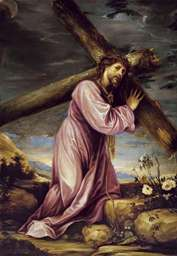
Jesus satisfies the two main principles of Martyrdom
- he has a choice to either live or die
- he prefers to die because he value someting higher than his own life
Luke rewrote of the passion by Mark revolutionize the picture of Jesus. In his version,
Jesus appears resolutely calm and self-controlled and he continues to instruct.
"Just as the Athenian informers convinced the people and then unjustly condemned Socrates,
so too our Savior and teacher was condemned by a few malefactors after being bound."
The second-century martyr Apollonius in Acts of Apollonius
"everything recorded of Jesus can be seen as nothing but the product of Mark's able imagination"
Bruno Bauer 1809-1882
c. Preaching a Passion Story
| Jerusalem & the Temple |
Eucharist & Betrayed |
Trial by the Sanhedrin |
Trial before Pilate |
Crucifixion | Death & Empty Tomb |
|
|
|||||
Entry into Jerusalem & the Temple
A Royal Entrance
Ahistorical- In a Zealot time, Romans had a low tolerance for even the slightest whiff of sedition, and would have dealt with it ruthlessly. They would probably not have permitted a man the crowd acknowledged King to enter the city to cheering crowds.
- Since he did nothing in Judea and Jerusalem, how could he be so beloved and popular there?
For what reasons would they have cheered him this way? - Coming from Galilee, there is little chance people would have known that Jesus, an unknown peasant, was arriving and even less chance that they would have created a 'red-carpet' on his way.
Josephus
Jesus ben Ananias comes to Jerusalem during a major religions festival in
The Wars of the Jews 6.301
OT parallelsSupernatural- Prophecy of the colt and villagers question Mark 11:1-6
- Curses the fig tree Mark 11:12-14, 20
Symbolic- The Donkey/Colt represents peace, humility, and the fulfillment of Zechariah 9:9.
- Palm Branches symbolize victory, peace, and honor, representing the crowd's recognition of Jesus as a triumphant king.
- Cloaks on the Ground symbolize an act of homage, loyalty, and recognition of his royalty.
- "Hosanna" (Save Us) signifies that the people were welcoming him as the Messiah, the King of Israel.
Teaching & Cleansing the Temple
AhistoricalWas the Jewish temple a "den of robbers"?
The Temple
"the Temple, fundamentally an economic institution, was the center of the economic life of Jerusalem,
driving employment for many petty producers like bakers, incense makers, goldsmiths, and so forth"
Moneychanging was a normal and sanctioned activity, necessary because the foreign coinage carried by pilgrims from overseas
for donations to the Temple had to be changed to a coin acceptable to the Temple.
C. Myers Binding the Strong Man: A Political Reading of Mark's Gospel.
First of all, and in general, there was absolutely nothing wrong with any of the buying and selling,
or money-changing operations conducted in the outer courts of the Temple.
Nobody was stealing or defrauding or contaminating the sacred precincts.
These activities were the absolutely necessary concomitants of the fiscal basis
and sacrificial purpose of the Temple."
J. D. Crossan (1992)
- "The total circumference of the outermost wall of the Temple ran to almost 9/10ths of a mile; twelve soccer fields, including stands, could be fit in; when necessary (as during the pilgrimage festivals, especially Passover) it could accommodate as many as 400,000 worshipers.Paula Fredricksen
If Jesus had made such a gesture, how many would have seen it? Those in his retinue and those standing immediately around him. But how many, in the congestion and confusion of that holiday crowd, could have seen what was happening even, say, twenty feet away? Fifty feet?
The effect of Jesus' gesture at eye-level would have been muffled, swallowed up by the sheer press of pilgrims. How worried, then, need the priests have been?" - As Josephus notes, there were Roman auxiliaries on call in the Fortress Antonia right nearby. The moneychangers undoubtedly had their own guards and servants, and so did the local priests. It is therefore unlikely that Jesus could have generated an incident there that was prolonged enough for anyone to notice. There were too many warm bodies to squelch it before it got rolling.
- "the Temple was not merely the main religious institution of the Jewish religion, it was also the national treasury and its best fortress. The Temple's importance should not be underestimated: all three sides in the internal struggle during the Jewish War fought to gain control of the Temple. Not only is it highly unlikely that Jesus could have simply strolled in and gained control of the Temple, it is also highly unlikely that anyone would have permitted him to leave unmolested after such a performance."G. W. Buchanan Symbolic Money-Changers in the Temple?
- In Mark 11:17, Jesus is teaching as he is tossing out the moneychangers. It is almost comic to imagine Jesus shouting out parts of the Old Testament while overturning benches and preventing people from carrying the sacrificial vessels around an area.
- How could everybody have feared so much in front of Jesus?
How could 'the crowd' have supported him while he was insulting the highest Jewish spiritual authority and sacred place and forbeid people to carry anything inside ? - What were Jesus 'astonishing' teachings ?
Teaching in the Temple
- It is implausible that Jesus is walking in the Temple, which two paragraphs ago he has just trashed.
- Why doesn't he reiterate his violent anger?
Are there no more money-changers?
Don't people bring anything to the temple anymore?
Or did they hide everything when they saw Jesus was coming back?
Or is it that all these financial transactions became now acceptable for Jesus? - High priests tried to debunk Jesus and can't despite his trivial or obscure answers.
Josephus
Jesus ben Ananias enters the temple area and rant against it
The Wars of the Jews 6.301
OT parallelsMalachi 3:1, Hosea 9:15, Zechariah 14;21, Isaiah 56:7, Jeremiah 7:11, Psalm 38:12, 71:10
SupernaturalProphecy of the destruction of the temple Mark 13:2
Symbolic
The cleansing of the temple symbolizes Jesus' authority to purify worship,
and the shift from animal sacrifice to direct access to God -something that
was happening at the time Mark wrote the story,
right after the Jewish War where Romans destroyed the Temple.
- The replacement of the physical Temple with the body of Jesus.
- By overturning tables, Jesus acts out a prophetic judgment against corrupt religious practices.
- The action fulfills Psalm 69:9, showcasing his, or "zeal for God's glory" and the cleansing of the religious system.
- The act serves as a sign (particularly in John 2:13-23) pointing to his divine authority to purify and reform religious life.
Eucharist, Betrayed & Arrest
Establishing the Eucharist
Ahistorical- Jewish law, the Torah, forbids expressively to give your blood to drink."This 'sacred meal' and the type of sacramentalism it entails, are not of Jewish derivation.
Eating the flesh and drinking the blood of the Deity -of any god- would have been a repugnant and blasphemous concept to any observant Jew, making it certain that an historical Jesus could never have established such a rite or foisted it upon his followers."
E. Doherty. see also Maccoby, Paul and Hellenism p. 99. - The whole idea of a ritual Last Supper is in essence a supernatural prediction of Jesus' own death, and is not likely to be historical.
OT parallelsExodus 24;8, Isaiah 25:6
The unnamed woman who anoints Jesus at dinner with a vial of very expensive spikenard perfume (Mark 14:3-9)
is inspired by Song of Solomon 1:12:
“While the king sitteth at his table, my spikenard sendeth forth the smell thereof.”
Supernatural- Prophecy of his own death & burial Mark 14:8
- Prophecy of the man carrying a jar & the passover room Mark 14:13-16
- Prophecy of the betrayal of Judas Mark 14:18
Symbolic- The Bread symbolizes Jesus' body, which would be broken (tortured) for humanity, providing spiritual nourishment and eternal life.
- The Cup represents the "blood of the covenant," signifying the new covenant established through His shed blood, offering forgiveness and freedom from sin's bondage, just as the Passover lamb's blood saved Israel from Egyptian bondage.
- It proclaims Jesus' death until He returns.
- It bridges the Old Covenant (Passover) with the New Covenant in Christ.
- Through Communion, believers are symbolically united with Christ and receive grace.
Betrayed & Arrest
Ahistorical- The kiss doesn't make sense historically:
why would they need someone to identify Jesus, who was teaching publicly in the Temple? And who had such triumphal entry into Jerusalem! - Mark does not indicate how Judas knew where Jesus was. Given that the author never mentioned that Judas left the Last Supper, surely the reader must be surprised to have him show up here.
- But what exactly did Judas "betrayed"? The exact word used to describe Judas' action means "handed over", but it doesn't give more historical root to the whole story.
- W. Randolph Tate in Reading Mark from the Outside (1995) points out that after having refused to arrest Jesus out of fear of the crowd, the leadership then arrests Jesus in front of a crowd of people.
- Why was the follower of Jesus (Peter according to John) not arrested after he cut the ear of a guard? The healing miracle by Jesus didn't exist in Mark. It was added later on by Luke. So, it was something that could have not been unpunished. Why no disciples were arrested? Or chased after they flew?
Josephus
Jesus ben Ananias is arrested by the Jews.
The Wars of the Jews 6.302
OT parallels- Judas Betrayal Obadiah 7, Psalm 41;9, Psalm 55:12-13, 109, Zechariah 11:10
- Doubts and Agony Psalm 22:2, 22:14, 22:20, 31:9, 42:5, Zechariah 13:7
Supernatural- Prophecy of Peter’s denial Mark 14:30
- Prophecy that his death is coming Mark 14:41-42
SymbolicThe betrayal of Jesus by Judas serves the purpose of the evangelist to represent the Jews as cold-hearted and duplicitous.
- Judas uses a kiss—a traditional sign of intimacy, respect, and affection—to betray Jesus, highlighting the hypocrisy, profound irony, and perverse distortion of love. He becomes the archetype of the traitor or the sinful.
- The Thirty Pieces of Silver: This acts as a symbol of greed and the perceived "worth" of Jesus, as this was the price of a slave in the Old Testament.
- The Disciples' Flight: The immediate scattering of the disciples highlights the abandonment of Jesus and the weakness of human faith in the face of fear.
- Jesus not defending himself, but rather directing the arrest ("If you are looking for me, let these men go"), symbolizes his sacrificial love and willing submission to God’s plan, taking on the role of a, willing victim.
See also chapter 1 the Treason of Judas in a A Biased Methodology.
Trial by the Sanhedrin
Ahistorical- No criminal session was allowed at night and the Temple gates are closed.
- No criminal trial could be held on the eve of a Sabbath or festival.
- No capital crime could be tried in a one-day sitting.
It is also unlikely that the Temple priests would have been willing to gather for a late-night trial in the evening of the busiest day of the year for them. - No Sanhedrin trial could be heard at any place other than the Temple precincts, and Mark is usually seen to imply that they met at the house of the High Priest.
- The festival celebrations involved wine-drinking, further impairing the willingness and ability of the Sanhedrin to gather.
- In Jewish jurisprudence witnesses had to be examined days prior to the trial to ensure that they would be present for the trial.
- No one could be found guilty on his own confession.
- No blasphemy charge could be sustained unless the accused pronounced the name of God in front of witnesses.
- The Sanhedrin were allowed to execute people on their own and did not need the Romans to do so for them.
- Blasphemy consists solely of speaking the name of YHWH, which Jesus does not do in Mark. The charge as presented here is clearly nonsense.
- The correct penalty for blaspheming is stoning, not crucifixion.
- Any Jew, including Peter or any supporter, could have appealed his case and delayed the death sentence.
- To say that the members of the council slapped and spit on someone in a trial is like saying that the justices of the Supreme Court would slap and spit on defendants. Yes, these were ancient times, but the institutions being talked about here were formal institutions that didn't just convene on a whim and they didn't act like savages, much less on Passover eve.
Josephus
Jesus ben Ananias is accused of speaking against the temple and is beaten.
He doesn't say anything for his defense.
The Wars of the Jews 6.302
OT parallelsSurrounded by Enemies Psalm 2,22, 27;12, 35:11, 109:2...
Symbolic- It symbolizes the profound failure of Israel’s religious leadership, as Jesus, the true Son of God, is condemned by those supposed to recognize Him.
- Jesus' silence during the false testimony (Mark 14:56) mirrors the prophetic description of a silent lamb led to slaughter, fulfilling Old Testament scriptures. The Suffering Servant (Isaiah 53).
- Conducted in secret, at night, using false testimony, the proceedings symbolize a blind corrupted justice, highlighting the "lawless" actions taken against an innocent man.
- The trial scene is interleaved with Peter’s three denials, which symbolizes human weakness and abandonment, providing a dramatic contrast to Jesus' steadfast, divine resolve.
Based on Tried Before the Sanhedrin
of the Historical Commentary on the Gospel of Mark by M. A. Turton.
Trial before Pilate
Ahistorical- "At this time, in Judea, there are no surviving records of an armed revolt or of Roman executions of notorious bandits, failed messiahs, or revolutionaries" R. Brown The Death of the Messiah. As Tacitus tersely put it: "Under Tiberius all was quiet" in Judea.
- The custom of releasing prisoners for feasts is not known anywhere in the Roman empire and as J. D. Crossan argues in The Historical Jesus: The Life of a Mediterranean Jewish Peasant, "Roman governors were more likely to postpone the execution or allow the family to bury the body, if they were inclined to clemency.
- Pilate was not known for his mercy (see Philo or Josephus). His three attempts to release Jesus are very weird... Matthew saw the problem and fabricated a fix "his wife sent him a message, 'Have nothing to do with that righteous man. I suffered much in a dream today because of him.'" Matthew 27:19
- Barabbas himself appears to be fictional.
No precision on his "murder in the insurrection" is given, and he could hardly have been the only prisoner in Pilate's hands, so why release a known anti-Roman rebel, bandit and murderer? It is inconceivable.
Josephus
Jesus ben Ananias is taken to the Roman governor and interrogated
and asked to identify himself. He doesn't say anything for his defense again and is beaten by the Romans.
The Wars of the Jews 6.304-305.
OT parallels- Trial by Jew and Gentile Psalm 39:9, 38:13-14... Deuteronomy 21:6-8
- Abuse and Suffering Psalm 22:6, Isaiah 53:3, 50:6-7, Micah 5:1, Zechariah 3:1-5
Symbolic- Pilate Washing His Hands (Matt. 27:24): A dramatic gesture symbolizing his attempt to absolve himself of guilt for condemning a man he believed to be innocent.
- The story of Barabbas emulates the Jewish ritual at Yom Kippur of the scapegoat and atonement. Mark has clearly merged the sacrifices of passover and Yom Kippur by having Jesus be a Yom Kippur sacrifice performed during Passover.
- The Silence of Jesus (Mark 15:5): Represents the fulfillment of the suffering servant prophecy (Isaiah 53:7) and shows Jesus' submission to the divine, rather than human, plan.
- The crown of thorns, the purple robe and the title "King of the Jews" ironically highlights Jesus' true kingship.
Crucifixion
Ahistorical- "If Pilate were simply doing a favor for the priests, he could have disposed of Jesus easily and without fanfare, murdering him by simpler means... So too with the priests: if for whatever reason they had wanted Jesus dead, no public execution was necessary, and simpler means of achieving their end were readily available."Paula Fredriksen (2002)
- The synoptics have Jesus crucified on the day of Passover, while John puts the crucifixion on the day before. This itself defies reason, as Passover is considered one of the holiest of Jewish holidays, and this holiday not only took considerable preparation, but was a time of forgiveness and celebration. It is also when the Jews made public sacrifices to their god. That the Jewish authorities would have held a public execution of someone at this time is itself pretty well beyond belief.
- It is weird the soldiers have ordered Simon to help out of pity since they had just abused and mocked Jesus.
- Golgotha is another place-name with no known referent.
"The site lies now inside the city walls, whereas the crucifixion took place outside the city. Just where the northern wall in the first century is not conclusively established... No other site, however, has any evidence at all to support it."Burrows (1977)
- In Mark 14:1 the chief priests fear that his execution during a feast will cause a riot, but then they go ahead and have Jesus executed at the beginning of the most important Jewish religious feast.
- There is no evidence from antiquity for the practice of placing an inscription with the charge above the condemned. The inscription is different in each of the canonical gospels.
- "Aha! You who would destroy the temple and build it in three days," Mark 15:29R. Brown The Death of the Messiah points out that passers-by would not be likely to know that Jesus had been accused of this falsely, for which of them would have been at the trial of Jesus by the Sanhedrin?
OT parallelsZechariah 12:10, Isaiah 53:12, Psalm 22:1, 7-8, 16, 18, 34:20, 69:21, Exodus 12:46, Numbers 9:12
Symbolic
The crucifixion of Jesus is deeply symbolic, transforming a Roman instrument of shame and death into a
profound symbol of divine love, salvation, and victory over sin.
- The crucifixion saves humanity from sin and reconciles it with God.
- The Cross represents the ultimate sacrifice and unconditional love.
- The Two Thieves represent the division of humanity (those who accept vs. reject salvation).
Death & Empty Tomb
Ahistorical- There are no records of darkness over the earth at this time either in Judea or the world.
- The confusion for bystanders of the word Eloi (my god) pronounced by Jesus with Elijah is unlikely.
- The loud cry of Jesus is almost certainly physically impossible, since Crucifixion killed by suffocation, and was undoubtedly preceded by unconsciousness. Further, how would the onlookers have known he breathed his last at that precise moment?
- Another supernatural event: the tearing of the Temple Veil, which nobody has recorded, not even Josephus.
- The recognition that Jesus is the 'Son of God' by the centurion is most probably fictional since the Roman soldiers have just mocked, abused and killed Jesus without restraint.
- Jesus was dead after a mere six hours when it ought to take days for the cross to kill.
- No legs cut though it was the custom.
OT parallels- Reactions Joel 2:10, Amos 8:9, Wisdom of Solomon 5:4-5
- Burial & Rising Deuteronomy 21:22-23, Hosea 6:1-2, Jonah 1:17
Greco-Roman"Moreover, many of the topoi used by the gospel writers convey Jesus’ special standing,
but they do so through familiar literary allusions—the empty tomb, for instance,
is found throughout Greek and Roman literature and material culture
(e.g., the novel and numerous paradoxographical fragments) to indicate supernatural status.""
Robyn Faith Walsh
Supernatural- Darkness over the whole land for 3 hours Mark 15:33
- Curtain of the temple torn in two Mark 15:38
- Jesus has risen Mark 16:6
Symbolic- The death on the cross symbolizes an atoning sacrifice, while the empty tomb shows this sacrifice was accepted.
- It demonstrates God's power in raising Jesus and confirms his divinity.
- The physical manifestation of Jesus rising from the dead represents the ultimate victory over death, sin, and the grave.
- It acts as a powerful, enduring symbol of hope for life beyond death for believers.
- The names of the women who found the emty tomb have rich symbolism.
Based on Dies and
Finding Tomb Empty
of the Historical Commentary on the Gospel of Mark by M. A. Turton.
Even more than his Galilean ministry, Jesus’s sojourn in Jerusalem is marked by such
significant historical improbabilities that it is better understood as a symbolic narrative.
- In the details, it is a pastiche of verses from the Psalms, Isaiah and other prophets.
-
As a whole, it retells a common tale found throughout ancient Jewish writings, that of the Suffering and Vindication of the Innocent Righteous One. Genesis, Book of Esther, Tobit, Susanna, Daniel, 3 Maccabees, Wisdom of Solomon...
-
It is the ultimate Martyrdom story.
d. How? - By
| Copying Each Other |
Fixating on Supernatural |
Haggadic |
Using Symbolism |
Cheating History |
Literary Constructs |
|
|
|||||
By Copying Each Other
We already found that current scholarship increasingly demonstrates that the content of the Gospels is deeply rooted in Jewish scripture
(Old Testament & Apocrypha) and Greco-Roman literary conventions, a consensus often highlighted in modern studies on the New Testament.
See chap.1: Where are we today? Main Findings.

Beyond this, it is becoming clear that we do not possess four entirely independent accounts of Jesus.
Instead, we have a dependent chain of literature, beginning with Mark, who appears
to have developed his narrative by incorporating themes and information from the earlier Pauline epistles.
All the Gospels derive their basic story of Jesus of Nazareth from a single source:
whoever produced the first version of Mark.
That Matthew and Luke are reworkings of Mark with extra,
mostly teaching, material added is now an almost universal scholarly conclusion.
John's Dependencies
Most scholars also consider that John has drawn his
framework for Jesus' ministry and death from a Synoptic source as well.
"Johannine experts point to abundant evidence that John was familiar with all three earlier Gospels,
and used them as his sources, freely rewriting them in his own words,
and not particularly troubled over how well his story aligned with theirs."
Fitzgerald, David Jesus: Mything in Action, Vol. I p. 192
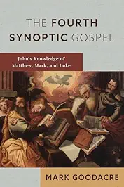
Mark Goodacre, a scholar at Duke, NC, recently showed that the Gospel of John
is dependent on the others.
See also Wikipedia Marcan priority
Carrier On the Historicity of Jesus p. 487-488
MacDonald Two Shipwrecked Gospels p. 48, n 11
Crossan Power of Parable pp. 218-42
This is particularly true for the Passion story:
Why do Matthew and Luke have to rely so completely on Mark?
Why does John, despite his profound theological innovation,
depend so completely on synoptic information?
J. D. Crossan The Birth of Christianity
"What we have is a single religious document,
written at least a generation after the time it portrays,
by an anonymous author far away from the setting
of the story for purely theological purposes."
written at least a generation after the time it portrays,
by an anonymous author far away from the setting
of the story for purely theological purposes."
Fitzgerald, David Jesus: Mything in Action, Vol. I p. 196
But there are some sayings we can find in Matthew and Luke
and not in Mark.
Common Sayings between Matthew and Luke not in Mark
They have very little narrative and resemble the Gospel of Thomas.
The two main explanations are:
- Matthew is its sole author
So Luke copied & rearranged him and the Myth theory fits very well. - They both relied on a source, now lost, we call Q.
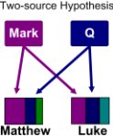
-
Q was, like the other books of the NT, written in Greek
and would have been left aside because it was entirely included in some Gospels, or whatever other reason we can find.
Then, from this hypothetical source, we can extract three distinct layers (see J. Kloppenborg
The Formation of Q, 1987):
- Q1: Wisdom and Cynic like sayings which are tolerant and often enlightened.
- Q2: Prophetic and Apocalyptic sayings which are narrow-minded, fulminating and without compromise.
- Q3: Some simple narratives.
The existence of Q is a matter of debate among scholars.
Here, I will take anything between 10% to 90% because we will see that Q or not Q,
it doesn't change a lot of things.
So, if Q existed, what can we deduct from it?
Can Q (or Thomas) be
an independent attestation of Jesus?
This is where the two Myth theories, described at the beginning, split.
| Scenario: A God Historicized | |
| Cryptic Myth | Full Myth |
|
Who was Jesus?
|
|
|
The Q1 layer "may contain a core of reminiscences of an itinerant Cynic-type Galilean preacher
(who, however, is certainly not to be identified with the Jesus of the earliest Christian documents)"
G.A. Wells
I guess other scholars could easily come up with different kinds of Jesus than the 'Cynic Philosopher',
as they do with the standard secular Jesus.
All these variant theories go under this umbrella, as long as they reject the passion and any HJ in the Epistles.
In any case, no death on the cross and passion story...
so Christianity would have still started with the mythical Christ of the Epistles.
|
Concerning the Cynic preacher, there is no denial for the existence of these kinds of men.
But the figure lacks stories.
These sayings could be attributed to many different authors.
We find many close parallels in the Hellenic literature and
some in the Mishnah too.
It also contains serious problems due to its radical message and lack of Jewishness.
|
For more details on these arguments and Q or other reconstructed texts,
see Appendix: Q & the Common Saying Tradition.
This study gives more chances to the version without any HJ,
but the margin is not too wide.
However, this possibility of a HJ behind Q1 or Q2 (or whatever list of sayings we can group)
doesn't help mainstream theories because these texts don't contain anything of what the Epistles say about Jesus:
 Son of God Savior Christ
Redeemer Eucharist Crucifixion
Resurrection...
Q (or Thomas) have nothing in common with the Jesus of the Epistles.
At that time, around the year 50, they couldn't be related.
Son of God Savior Christ
Redeemer Eucharist Crucifixion
Resurrection...
Q (or Thomas) have nothing in common with the Jesus of the Epistles.
At that time, around the year 50, they couldn't be related.
Son of God Savior Christ
Redeemer Eucharist Crucifixion
Resurrection...
Q (or Thomas) have nothing in common with the Jesus of the Epistles.
At that time, around the year 50, they couldn't be related.
If the hypothetical Q existed, mainstream theories on Jesus are again in a dead end.
How can the Q community ignore entirely that their Jesus went to Jerusalem, got crucified, resurrected and is worshiped now, up to Rome, as the Son of God and Redeemer of World's Sin?
On the other side, how can the Epistles also ignore everything mentioned in Q?
How can the Q community ignore entirely that their Jesus went to Jerusalem, got crucified, resurrected and is worshiped now, up to Rome, as the Son of God and Redeemer of World's Sin?
On the other side, how can the Epistles also ignore everything mentioned in Q?
By copying Josephus?
We have seen that the Passion story has a lot of similarities with the tale of
Jesus ben Ananias in
Josephus The Wars of the Jews (Book 6, Chapter 5, Section 3)
"Jesus comes to Jerusalem for one of the great festivals and creates a prophetic disturbance in the temple.
He preaches soon-coming judgment, the destruction of the temple, and he says it will spell the end of ordinary life.
The elders of the people haul him before the Roman procurator, who interrogates him but gets only silence for an answer.
He decides to have him flogged and let him go (as in Luke 23:22b)."
R. Price The Incredible Shrinking Son of a Man
Mark might have known the story without having read it in Josephus,
as he might be too early.
R. Carrier summarizes an argument made by Steve Mason in his book
Josephus and the New Testament
that Luke knew of Josephus'
Jewish War (79 CE) and Jewish Antiquities (94 CE).
See Luke and Josephus (2000)
By copying Paul
As we found, Mark, himself, copied and got infuenced by other sources like the Scriptures.
That include Christian sources like Paul, see Mark’s
Use of Paul’s Epistles.
Fixating on Supernatural
Supernatural is at the heart of the story. We have seen
in What? A Jewish Fairy Tale that the Gospel of Mark contains
1 new miracle of Jesus every 20 verses
almost 1 new fantastical thing every 6 verses!
almost 1 new fantastical thing every 6 verses!
We have seen the parallels between the miracles below and the ones in the OT
or Greco-Roman world.
Born from the Virgin Mary and the Holy Spirit
Luke 1:11-2:22, Matthew 1:18-2:21
Exorcism
Healing People
Mark 8:22-26, 10:46-52 (blind), 1:40-45 (leprosy), 1:29-31 (fever), 2:1-12 (paralysis), 3:1-6 (hand), John 9:1-41 (blind)
Raising the Dead
Walking on Water
Mark 6:45-51 + Peter in Matt 14:28-33
Calming the Storm
Mark 4:35-41, Luke 5:1-11, John 21:4-13
Feeding the Multitudes
Mark 6:36-44, 8:1-10, John 2:1-11
Turning Water into Wine
Mark 6:36-44, 8:1-10, John 2:1-11
Resurrection & Ascension
Luke/Matthew/John
Daemons and the Devil represent the necessary opposite force.
Jokingly, according to Mark & Matthew, the Devil
tempts Jesus into avoiding his fate, while it was all his plan with Luke & John.
See Robert Price.
It leads to another problem: without all the folklore, the story shrinks so much that it is hard to make any sense of it.
"A pile of pieces--sayings, deeds--do not constitute a story,
and without story there cannot be character, and without character, there cannot be meaning.
Once that given by the gospels is abandoned, another must be imported.
All the sifting and sieving of the individual pieces leads nowhere by itself."
T. Johnson a conservative ex-priest, attacking the Jesus Seminar
Similarly, in the second volume of A Marginal Jew
J. Meier (a Catholic priest) devotes 530 pages to the question of Jesus' miracles.
Within that is a (relatively) brief thirteen pages making a general case for the historicity of them, in which he concludes:
"Put dramatically but with not too much exaggeration:
if the miracle tradition from Jesus' public ministry were to be rejected in toto as unhistorical,
so should every other Gospel tradition about him."
By Haggadic Midrash
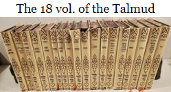
Not only do the Gospels contain basic and irreconcilable differences in their accounts of Jesus,
they have been put together according to a traditional Jewish practice known as "midrash", which involved reworking and enlarging Scriptures.
Indeed, in 25 pages, the first Gospel contains more than 150 direct citations, allusions, and references to the Septuagint,
and there are even more in the Gospel of Matthew.
For example, the Passion story:
- As a whole, it retells a common tale found throughout ancient Jewish writings,
that of the Suffering and Vindication of the Innocent Righteous One.
Genesis, Book of Esther, Tobit, Susanna, Daniel, 3 Maccabees, Wisdom of Solomon...
- In the details, it is a pastiche of verses from the Psalms, Isaiah and other prophets.
Passion Common Verses with OT
| Arrival in Jerusalem | Zechariah 2:10, 9;9, Zephaniah 3:14, Psalm 118. |
| Cleansing the Temple | Malachi 3:1, Hosea 9:15, Zechariah 14;21, Isaiah 56:7, Jeremiah 7:11, Psalm 38:12, 71:10 |
| Judas Betrayal | Obadiah 7, Psalm 41;9, Psalm 55:12-13, 109, Zechariah 11:10 |
| Last Meal | Exodus 24;8, Isaiah 25:6 |
| Doubts and Agony | Psalm 22:2, 22:14, 22:20, 31:9, 42:5, Zechariah 13:7 |
| Surrounded by Enemies | Psalm 2,22, 27;12, 35:11, 109:2 ... |
| Trial by Jew and Gentile | Psalm 39:9, 38:13-14 ... Deuteronomy 21:6-8 |
| Abuse and Suffering | Psalm 22:6, Isaiah 53:3, 50:6-7, Micah 5:1, Zechariah 3:1-5 |
| Crucifixion | Zechariah 12:10, Isaiah 53:12, Psalm 22:1, 7-8, 16, 18, 34:20, 69:21, Exodus 12:46, Numbers 9:12 |
| Reactions | Joel 2:10, Amos 8:9, Wisdom of Solomon 5:4-5 |
| Burial & Rising | Deuteronomy 21:22-23, Hosea 6:1-2, Jonah 1:17 |
Miracles were part of the arrival of the Messiah:
"Then the eyes of the blind shall be opened,
And the ears of the deaf unstopped;
Then shall the lame man leap like a hart,
And the tongue of the dumb sing for joy."
And the ears of the deaf unstopped;
Then shall the lame man leap like a hart,
And the tongue of the dumb sing for joy."
Isaiah 35:5-6
"But thy dead live, their bodies shall rise again.
They that sleep in the earth will awake and shout for joy."
Isaiah 26:19
For scholarship, it is unrelated to Jesus' existence
"The things that happen to Jesus in Matthew closely parallel the Old Testament traditions about Moses...
But the fact that Matthew shaped the story in this way has nothing to do with the question of whether or not Jesus existed."
"The Gospels ... do indeed contain non-historical materials, many of which are based on traditions found in the Hebrew Bible...
But that has little bearing on the question whether or not Jesus actually existed."
B. Ehrman Did Jesus Exist?: The Historical Argument for Jesus of Nazareth
Of course it does. If the Gospels are full of fake stories,
there is no reason to believe anything they say about their hero.
The burden of proof is on their side.
By Using Symbolism & Allegory
Symbolism is a pervasive element within the Gospels,
a fact widely recognized by Biblical scholars. While numerous examples exist,
this discussion will highlight several key instances of this literary technique.
As we have shown in Preaching a Passion Story, most of the Passion is profoundly symbolic.
Nazareth
The term "Nazarene" holds deep, multi-layered symbolism in Christian theology,
far exceeding a simple geographical label for someone from Nazareth.
It represents a complex blend of:
- Prophecy: the Hebrew word netzer means the "Branch" which connects to the prophetic verse of Isaiah 11:1 "A shoot will come up from the stump of Jesse [David's father]; from his roots a Branch will bear fruit,"
- Consecration: the root nazar relates to being separated or consecrated to God. This shares a similar spiritual meaning with the Nazirite vow (Numbers 6), which involves complete dedication to God. A Nazarene represents a life separated from secular trends and sin, consecrated for divine service.
- Social Status: highlights Jesus' humble beginnings with the poor, the overlooked, and the marginalized and his identity as a "suffering servant" who was despised and rejected, fulfilling prophecies like Isaiah 53:3.
- Revealer of Truth: the third-century Gnostic Gospel of Philip claims "The Nazarene" signifies "the Truth". The church father Irenaeus also tells us that “Jesus Nazaria” means “Savior of Truth.”
Baptism
"A belief part of the Messiah expectation was that God's arrival would be preceded by the appearance of the prophet Elijah
(Malachi 4:5). Thus John the Baptist has become a stand-in for this expected precursor,
since any group claiming that the kingdom was about to arrive had to be able to point to an Elijah-type figure
to fulfill the scriptural expectation."
Earl Doherty
Temptations
One interpretation for the three temptation stories in Q is
- Don't be anxious over worldly needs.
- Don't worry about death.
- Don't aspire to political power or revolt.
But more importantly, they symbolize the ones which the community members themselves face.
Jesus' response, as fashioned by Q and its redactors Matthew and Luke, represents the attitudes which
need to be adopted in order to neutralize those temptations. Jesus thus serves as a model for the community,
to represent their ideal mode of behavior.
Barrabas
The story of Barabbas emulates the Jewish ritual at Yom Kippur of the scapegoat and atonement.
Mark has clearly merged the sacrifices of passover and Yom Kippur by having Jesus be a Yom Kippur sacrifice performed during Passover.
Miracles
- Mark 5:1-20 is a political allegory of the Jewish will to drive the Romans legions, unclean swine, into the sea and out of the Holy Land. See Gerd Thiessen Sociology of Early Palestinian Christianity p. 101-102 - 1978
- Jesus exorcism around Tyre for the daughter of a Syro-Phoenician woman (Mark 7:24-30) and the Q story of the Centurion's servant (Matt 8:5-13/Luke 7:1-10) symbolize the authorization to spread the Gospels to Gentiles outside Palestine.
-
Several miracle stories (like Mark 9:14-29) are designed to demonstrate that the disciples can never become equal to their master, Jesus.
Something you can see elsewhere like:
- 2 Kings 4:8-37 where no one but Elisha can do the job.
- A woman had a tapeworm and the cleverest of the physicians failed to cure her...
The god then approached and was provoked at them because they set themselves to a task beyond their wisdom.
Aelian On the Nature of Animals -
Famous story of the Sorcerer's Apprentice.Lucian Lover of Lies
- Many miracles stories can be used as patterns and even as ritual recitals to be used in Christian healing ministry. The name Jesus would be employed as an incantatory name.
- Jesus needs a second attempt to fully restore the sight of a blind (Mark 8:22-26). This detail is a symbol of the two stages of the awakening of the disciples' faith. They see the truth clearly enough to heed Jesus' call to follow, and yet they have no understanding of his divine fate till the end.
- "Jairus" means "He will awaken" and his daughter will be resurrected by Jesus.
The Curse of the Fig Tree
"The next day as they were leaving Bethany, Jesus was hungry.
Seeing in the distance a fig tree in leaf, he went to find out if it had any fruit. When he reached it,
he found nothing but leaves, because it was not the season for figs.
Then he said to the tree, “May no one ever eat fruit from you again.” And his disciples heard him say it."
Mark 11:12-14
"In the morning, as they went along, they saw the fig tree withered from the roots.
Peter remembered and said to Jesus, “Rabbi, look! The fig tree you cursed has withered!”"
Mark 20-21
While it might look like a "hangry" moment that makes little sense,
scholars (R.G. Hamerton-Kelly, James Charlesworth...) view this as an allegory
and prophecy about the rejection of the temple sacrifice system:
- Spiritual Hypocrisy: The tree's leaves gave a false promise of fruit. This symbolized the Temple in Jerusalem, which had all the "leaves" of religious ritual, including its sacrifice system, but lacked the "fruit" of true faith and righteousness.
- Judgment: The eventual withering of the tree (seen the next day) represented the coming judgment on Israel's spiritual leaders for their fruitlessness. The Temple will be destroyed by Romans about three decades after.
- Lesson on Faith: Jesus later used the withered tree to teach his disciples about the power of faith in God and the importance of prayer.
See The Gospel of Mark as Theological Allegory
by Jonathan Rutherford
By Cheating History
Although Jesus' ministry in Galilee has a lot of historical issues, from anachronism (John 9:1-41)
to geographic errors (Mark 5:1), the passion story sets the bar to an entire new level.
There, almost everything defy historical credibility.
Ahistorical:
- Entrance in Jerusalem
- Teaching & Cleansing the Temple
- Establishing the Eucharist
- Doubts, Betrayed & Arrest
- Trial by the Sanhedrin
- Pilate, Barabbas and a Jewish Mob
- Jesus's Behavior & Words on the Cross
- An Earthquake, Dark Sky, Empty Tomb
Based on Historical Commentary on the Gospel of Mark
by M. A. Turton.
By using Literary Constructs
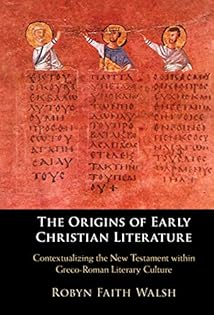
The Gospel narratives are seen as incorporating popular literary devices and storytelling methods from ancient Greece,
including elements of epic heroes and adventure stories. The goal of imitating these forms was to make the stories of
Jesus and his followers relatable and authoritative to the readers of the time.
It is not a romance in the modern sense.
The connection is not about romantic love stories but about the use of narrative structures
and heroic archetypes common in the ancient Greek literary tradition, according to the scholarly analysis.
See the book The Origins of Early Christian Literature:
Contextualizing the New Testament within Greco-Roman Literary Culture
or what R. Carrier says about it Robyn Faith Walsh and the Gospels as Literature.
"[W]hen compared with other first-century literature, the Jesus of the gospels can be fruitfully compared with the Cynics,
Aesop, the pastoral heroes of the Greek novel, or witty underdogs in the biographical tradition,
the subject of [my] Chapter 5. Moreover, many of the topoi used by the gospel writers convey Jesus’ special standing,
but they do so through familiar literary allusions—the empty tomb, for instance,
is found throughout Greek and Roman literature and material culture (e.g., the novel and numerous paradoxographical fragments)
to indicate supernatural status. Even strategic omissions, like anonymity, are common tricks of the trade among imperial writers
[especially Jewish writers, pp. 156-57] and can be understood without associations with memory traditions or communal authorship,
as I discuss in [my] Chapter 4."
R. Walsh The Origins of Early Christian Literature.
The Chiastic Structures
See also on Vridar blog
That Curious Ring Composition or Chiastic Structure in Ancient Writings
Cross References
During Jesus' Baptism, Mark described John the Baptist:
"Now John was clothed with camel’s hair, with a leather belt around his waist"
Mark 1:6
"He was a man with a garment of hair and with a leather belt around his waist."
2 Kings 1:8
"He [Jesus] said to them, ‘Elijah is indeed coming first to restore all things.
How then is it written about the Son of Man, that he is to go through many sufferings and be treated with contempt?
But I tell you that Elijah has come, and they did to him whatever they pleased, as it is written about him.’"
Mark 9:12-13
Here the author of Mark tells the reader that Elijah has already come, but he doesn't explain what that means.
The reader has to figure out that John the Baptist is Elijah, which can only be done by making the connection
between Mark 1:6 and 2 Kings 1:8.
Obviously these types of twists and riddles are written into the text on purpose
for literary and mystical value, this isn't how someone would write a historical work.
There are many examples like this one in the Gospels.
The Messianic Secret
Jesus constantly tells people not to share who he is.
He repeatedly silences the demons (Mark 1:23-25, 34; 3:11ff; 5:6ff; 9:20),
the people whom he healed (Mark 1:43-45; 5:43; 7:36; 8:26),
and the disciples (Mark 8:30; 9:9).
But this feature only exists in the Gospel of Mark!
In his landmark 1901 work The Messianic Secret (Das Messiasgeheimnis), German theologian William Wrede
argued that the structure and sequence of events in the Gospel of Mark were not a straightforward,
historical record of Jesus’s life, but rather a theological invention (or construction) of the author.
Wrede showed that the "secrecy" commands (e.g., commanding demons or disciples to be silent)
and the overall narrative flow are not plausible as history, but are theological motifs added to the tradition.
The Grammar of miracle stories
"The New Testament miracle stories share a formula with other ancient wonder stories.
They all follow the same syntax, varying only the paradigmatic options, and that not by much.
The narrative syntax of the miracle story is as follows
The narrative syntax of the miracle story is as follows
- The setting, described in brief strokes, only as much as we will need for the action to make sense. Jesus is surrounded by a crowd, or on the open sea, or is separated from the disciples, or is with a crowd in a wilderness.
- The severity of the plight from which the miracle will rescue the sufferer(s), perhaps the duration of an illness. Jairus's daughter was cut off at the tender age of twelve. The old woman had a twelve year menstrual flow and has wasted all her savings on quack doctors. The lame man can't get anybody to help him to the healing bath. The crowd hasn't eaten in days. The disciples are about to be capsized in the storm. The man's son has had his demon since childhood. The dead man was the only support of his wid owed mother.
- The announcement by the miracle worker (or there is some equivalent signal) that he will act to save the day. "Our friend Lazarus sleeps, but I will go and wake him up." "You give them something to eat." "She is not dead but asleep." "Where is your faith?" "Do you want to be healed?" "Roll away the stone from the tomb."
- The skepticism of the bystanders, an element designed to raise the bar, to heighten dramatic tension and increase the odds the hero must meet. "They laughed him to scorn." "How are we to feed such a multitude with these?" "Teacher, do you not care if we perish?" "Lord, by this time he stinketh!" "What do you mean, 'Who touched me?' The whole crowd presses upon you!" The point of this device is to anticipate the hearer's skepticism and to say, "Wait and see!" Sometimes the skepticism element is turned around, and it is the hero who raises the bar for the suppliant, in order to test his or her faith. "Too bad! I sent only to the wandering sheep of Israel." "What do you mean, 'If you You people just will not believe unless you see miracles!" "Do you here I can do this?"
- The miracle worker does something, some discrete word or gesture to the trick. Jesus puts his fingers into the deaf man's ears, pulls them out, and jells. "He opened!" He takes the hand of Jairus's daughter and says to her, "Get inle girl." He takes the hand of the widow's son. He rebukes the storm or the ver He calls, "Lazarus, come forth!" He smears mud on the blind man's eyes and sends him to wash it off.
- The miracle occurs. The dead rise, the lame walk, the blind see, the hungry are fed, the water becomes wine.
- The narrative offers concrete proof, or what would have been cepted as such had you been there, a distinction it is hoped you will not think in draw (1 Cor. 15:6, John 20:26-29). Jairus's daughter walks and eats lunch. thence no ghost). There are baskets of the miraculous food left over. The pos- wased pigs stampede over the cliff. The formerly lame man walks home, car- fying his pallet. The blind man tells what he sees.
- The acclamation of the crowd. "We have never seen anything like this!" "God has visited his people!" "A great prophet has arisen among us!" He does all things well!" "A new teaching! And with authority, for even the demons obey him!" The intent here is to cue the hearer to the desired reaction, like the laugh track on a television sitcom.
R. Price The Incredible Shrinking Son of Man
By an Oral Tradition about Jesus of NazarethThe HJ theory relies entirely on the hypothesis that there was an Oral Tradition about Jesus
for more than 50 years, until Mark wrote his Gospel.
However, there is no echo of it anywhere, including the Epistles!
A Passion Story transmitted verbally?
- How can the followers of Jesus have transmitted a story where they look so stupid, blind and coward?
Would they have not tried to show them in a positive light? - Can 'oral tradition' function and survive in a framework where the speaker only gives "scriptural" content?
"Now, the gambling for Jesus' clothes at the foot of the cross...
But That too didn't happen, it's from Psalm 22." - How could it be that no details of the historical event of Jesus' death be known and integrated into the oral traditions, so that something else besides Scriptures would show up in the Passion account?
In the supposed context of fluid oral transmission of an historical event supposedly
taking place decades earlier spreading to multiple communities in uncoordinated fashion,
- How can we have three subsequent Gospels which evince no historical traditions of their own different from Mark's?
- How can they have slavishly copied Mark not only in the details, but in the pattern in which those details are presented?
- If the odd new element is introduced by Matthew or Luke or John, it can be identified as further midrash and fitting their own theological agendas. Does any of this tend to support the 'core' of the passion story?
Gospels Result
| Literary Context | |||||||||||||||||||||||||||||||||||||||||||||||||||||||||||||||||||||||||||||||||||||||||||||||||||||||||||||||||||||||||||||||
| Literary Context |
|||||||||||||||||||||||||||||||||||||||||||||||||||||||||||||||||||||||||||||||||||||||||||||||||||||||||||||||||||||||||||||||
| Preaching Jesus Was Preaching
a Passion Story |
|
||||||||||||||||||||||||||||||||||||||||||||||||||||||||||||||||||||||||||||||||||||||||||||||||||||||||||||||||||||||||||||||
| How the Stories were created | |||||||||||||||||||||||||||||||||||||||||||||||||||||||||||||||||||||||||||||||||||||||||||||||||||||||||||||||||||||||||||||||
| How? - By |
|||||||||||||||||||||||||||||||||||||||||||||||||||||||||||||||||||||||||||||||||||||||||||||||||||||||||||||||||||||||||||||||
| Probability | |||||||||||||||||||||||||||||||||||||||||||||||||||||||||||||||||||||||||||||||||||||||||||||||||||||||||||||||||||||||||||||||
| Scholarship | |||||||||||||||||||||||||||||||||||||||||||||||||||||||||||||||||||||||||||||||||||||||||||||||||||||||||||||||||||||||||||||||
Scholarship |
|
||||||||||||||||||||||||||||||||||||||||||||||||||||||||||||||||||||||||||||||||||||||||||||||||||||||||||||||||||||||||||||||
| This Study* | |||||||||||||||||||||||||||||||||||||||||||||||||||||||||||||||||||||||||||||||||||||||||||||||||||||||||||||||||||||||||||||||
This Study* |
|
||||||||||||||||||||||||||||||||||||||||||||||||||||||||||||||||||||||||||||||||||||||||||||||||||||||||||||||||||||||||||||||

* Final estimation including chap.5 Jesus Outside the Bible and chap.6 Debatting Possible References to a HJ.
The Christian Midrash of Jesus of Nazareth
"Traditionally, Christ-Myth theorists have argued that one finds a purely mythic conception of Jesus in the epistles
and that the life of Jesus the historical teacher and healer as we read it in the gospels is a later historicization.
This may indeed be so, but it is important to recognize the obvious:
the gospel story of Jesus is itself apparently mythic from first to last.
In the gospels the degree of historicization is actually quite minimal,
mainly consisting of the addition of the layer derived from contemporary messiahs and prophets.
One does not need to repair to the epistles to find a mythic Jesus.
The gospel story itself is already pure legend.
What can we say of a supposed historical figure whose life story conforms virtually
in every detail to the Mythic Hero Archetype,
with nothing, no "secular" or mundane information, left over?
R. Price Deconstructing Jesus
Like,
The Romans with Romulus
The Ionians with Theseus
The Dorians with Hercules and his Twelve Labors
The Mycenaeans with Perseus, who established the hegemony of Zeus and the Twelve Olympians
The Olympic Games with Pelops
The Jews with the Exodus & Moses
Christians have rewritten their own origin,
The Christians with Jesus of Nazareth
|
"Then a few voices began to proclaim Romulus's divinity;
the cry was taken up, and at last every man present hailed him as a god and son of a god,
and prayed to him to be for ever gracious and to protect his children.
...
Romulus, Proculus declared, the father of our City descended from heaven at dawn this morning and appeared to me. In awe and reverence I stood before him, praying for permission to look upon his face without sin. "Go", he said, "and tell the Romans that by heaven's will my Rome shall be capital of the world. Let them learn to be soldiers. Let them know, and teach their children, that no power on earth can stand against Roman arms". Having spoken these words, he was taken up again into the sky." Livy 1.16 The Early History of Rome
|
"And he said to them, "Go into all the world and preach the gospel to the whole creation.
He who believes and is baptized will be saved; but he who does not believe will be condemned.
And these signs will accompany those who believe: in my name they will cast out demons; they will speak in new tongues;
they will pick up serpents, and if they drink any deadly thing, it will not hurt them;
they will lay their hands on the sick, and they will recover."
So then the Lord Jesus, after he had spoken to them, was taken up into heaven, and sat down at the right hand of God." Mark 16:15-19
|
| As the god Quirinus, Romulus joined Jupiter and Mars in the Archaic Triad. | Jesus joined his Father and the Holy Ghost in the Christian Holy Trinity. |
|
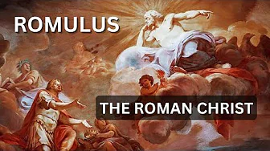 The Tale of Romulus is Alive in Christianity! |
|
Appendix: Q & the Common Saying Tradition
A list of sayings independent of Mark
Q & the Common Saying Tradition.
Q & the Common Saying Tradition.
Appendix: Rewriting History in Acts
Acts is a tendentious creation of the second century, dependent on the Gospels and designed
to create a picture of Christian origins traceable to a unified body of apostles in Jerusalem who were followers of an historical Jesus.
Many scholars now admit that much of Acts is sheer fabrication.
Open Popup menu to navigate other pages